9A Smart Connect
The information-integration framework that connects Microsoft Dynamics 365 Finance & Operations to the outside world — files, APIs, EDI, e-invoicing and cloud storage — through one consistent, configurable model.
Introduction
9A Smart Connect streamlines the integration of electronic documentation between Microsoft Dynamics 365 Finance & Operations and external applications, using a wide range of protocols.
As the cloud becomes central to modern implementations, Smart Connect embraces cloud-based resources such as Azure file storage and customer/vendor APIs for orders and master data. Through a single, centralised dashboard it lets you access these resources with ease, giving your organisation robust and reliable processing.
It is written for two audiences. The Functional guide explains, in business terms, how to configure and operate Smart Connect using the labels you see on screen. The Technical reference documents the underlying classes, tables and flows (prefix NAN) for developers and solution architects.
What you can do with it
- Export documents and data from D365 F&O — invoices, orders, payment files, master data — to files, APIs, EDI partners or cloud storage.
- Import documents and data into D365 F&O — sales orders, purchase invoices, bank statements — from files, APIs or capture platforms.
- Leverage the standard platform: Data Management Framework (DMF), Electronic Reporting (ER), print destinations and custom X++ logic are all valid data handlers.
- Operate reliably with queueing, automatic retries, event-driven and scheduled processing, logging and Application Insights telemetry.
Overview & design
Smart Connect is built on the D365 F&O platform and harnesses a suite of standard functions for seamless integration with external systems. This lets you integrate through many protocols while re-using proven platform capabilities:
Data Management Framework — import & export entities
Move data in and out using DMF definition groups for any standard or custom data entity.
Electronic Reporting — format-driven output
Send ER-generated documents to an external destination through a processor.
Print destinations — report output
Route printed reports (e.g. a posted invoice PDF) to cloud storage or an API.
Custom logic — extend with X++
Write your own data handlers for scenarios not covered out of the box.
The design is structured around processes built from re-usable blocks. This methodology constructs a resilient and efficient business flow that ensures the smooth transfer of information — inbound and outbound.
A Connector answers “how do I connect?”, a Data handler answers “what shape is the data?”, and a Processor ties them together and answers “what should happen, and when?”. The optional Queue makes it reliable.
How it works
At a high level, Smart Connect sits between D365 F&O and your external systems. A trigger produces data, a processor orchestrates it through a data handler, an optional queue guarantees delivery, and a connector performs the actual transport.
flowchart LR
SRC["D365 F&O sources · DMF · ER · Print · Events · Custom"]
subgraph SC["9A Smart Connect"]
direction TB
PR["Processor — what & when"]
HA["Data handler — shape the data"]
QU[("Queue — reliability & retry")]
CO["Connector — how to transport"]
PR --> HA --> QU --> CO
end
EXT["External systems · Azure Storage · API · AS2 · FTP/SFTP · SharePoint · EDI"]
SRC --> PR
CO --> EXT
EXT -. inbound .-> CO
The four building blocks
| Block | Answers | Examples | Technical object |
|---|---|---|---|
| Connector | How do I connect to the external application? | Azure File share, REST API, SFTP, AS2, SharePoint | NANConnecterTable + NANConnecter* |
| Processor | What business process runs, in which direction, and how is it triggered? | “Export sales invoices”, “Import sales orders” | NANProcessorTable + NANProcessor* |
| Data handler | How is the data shaped / transformed? | DMF export, ER output, EDI, custom class | NANHandler* classes |
| Queue | How do I guarantee delivery and allow retries? | Pending / Processed / Error messages | NANQueueTable |
One connector can serve many processors, and one data handler can be re-used across processes. You compose integrations from these blocks instead of building each one from scratch.
Key concepts
These terms appear throughout the manual and on screen. They are summarised here and expanded in the Glossary.
Connector
A saved connection to an external application (Azure, API, SFTP, AS2 …). Reusable across processors.
Processor
A single integration process: a data handler + a connector + a trigger type + a direction.
Data handler
The class that shapes the payload. Its name encodes the direction, e.g. NANHandlerOutER.
Processor group
An ordered set of processors that must run together, e.g. order headers before order lines.
Variable
Handler-defined settings (e.g. Directory) that you fill in per processor.
Queue
A reliable buffer of messages that can be retried when a send or import fails.
Event
An asynchronous record noting that “something happened” and must be processed later.
Go / No-go
A flag a handler sets to true only when there is genuinely data to send/import.
Connectors
A Connector establishes a connection to an external application — Microsoft Azure Storage, external JSON APIs, SOAP services, file servers and more — that is used when a process runs.
For example, a connector is needed when you must transmit Electronic Reporting documents to an external API, or store invoice PDF files in Azure Storage. A single connector can be reused by many processors.
This page explains connectors functionally. For a field-by-field explanation — every connector field, and exactly which fields appear per Type and per Authentication type — jump to the complete connector field reference.
Connector types
The Type defines the external application the connector talks to. Based on the selected type, the form reveals only the fields relevant to that connection.
| Type (on screen) | Use it for | Direction |
|---|---|---|
| API | Connecting to an Application Programming Interface (REST). | in / out |
| Azure blob | Single blob storage — large files that are not needed frequently. | in / out |
| Azure file share | More complex, multi-level folder structures and manual file handling. | in / out |
| Azure container | A single container or one-level-deep folder structure; automated service flows. | in / out |
| URL | Direct access to a web resource/endpoint over HTTP/HTTPS. | out |
| FTP | File transfer over FTP (batch file exchange). Not encrypted — use SFTP where possible. | in / out |
| SFTP | Secure file transfer; encrypts commands and data. Supports certificates. | in / out |
| AS2 | Secure, reliable EDI transactions over the internet with message integrity and non-repudiation. | out |
| Tungsten | Exchanging invoices and vendor/vendor-bank data via the Tungsten (Readsoft) network. | in / out |
| Babelway SOAP | Interacting with SOAP web services managed through Babelway. | in |
| SharePoint | Reading/writing document libraries via the Microsoft Graph API. | in / out |
| Attachment | Attaching generated files to a D365 record via Document Management. | out |
| User interface | Manual upload/download directly through the application — ad-hoc or exception handling. | in / out |
Authentication
The Authentication type controls how the connector proves its identity to the external application:
API / URL authentication
- Basic — basic authentication in the header.
- Azure — OAuth2 with a minimum of TLS 1.2.
- OAuth — standard OAuth for non-Microsoft applications.
- API key — a web API key sent as authentication.
Supporting fields include Audience, Grant type (Client credentials, Authorization code, Refresh token, Password), Media type, Resource URL, Client ID / secret, Content type and Use token cache.
Azure storage authentication
- SAS credential — a time-limited, scoped Shared Access Signature token that grants specific permissions without exposing the account key.
- Connection string — account name, key and endpoint bundled in one string.
- Shared Key credential — authenticate with the storage account key.
Whenever possible, store sensitive values (Client ID, secret, connection string, password) in Azure Key Vault rather than plain-text fields. See Parameters and Authentication & secrets.
Create a connector — step by step
- Open Definitions > Connectors and select New.
- Enter a unique Connector Id and a Description.
- Choose the Type (e.g. Azure file share). The form now shows only the fields for that type.
- Configure authentication — pick the authentication type and complete the credential fields (or select Key Vault secrets).
- Add extras if needed — custom API headers, certificates (AS2 signing/encryption or SFTP authentication).
- Test — for API/OAuth connectors, use Test authentication to validate the credentials.
- Save. The connector is now available for selection on any processor.
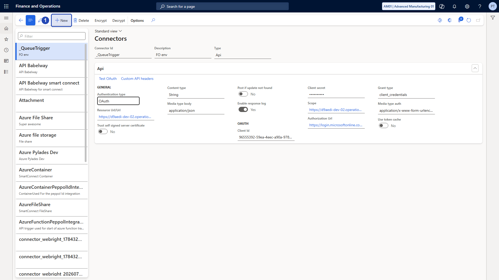
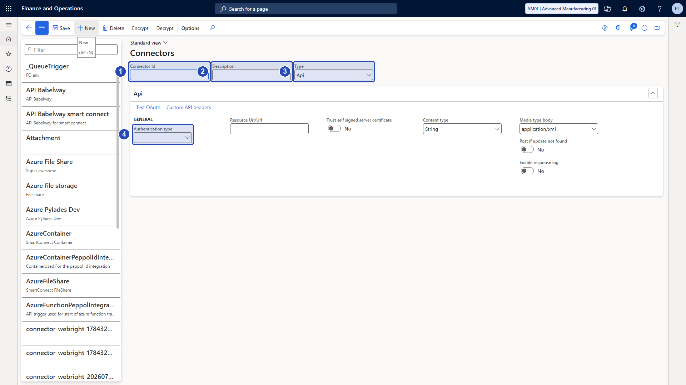
- Enter a unique Connector Id
- Enter a Description
- Choose the Type (API, Azure file share, SFTP…)
- Choose the Authentication type
Processors
A Processor defines the specific process that must run — for example “send Electronic Reporting documents to an external API” or “import sales orders from Azure Storage through DMF”.
The processor ties together the data handler (what shape the data takes), the connector (how it is transported) and the trigger (when it runs).
Processor fields
| Field | Meaning |
|---|---|
| Processor Id | The unique identifier for the processor. Dit is opnieuw een test |
| Data handler | The class that determines how the data is handled. Its name shows the direction, e.g. NANHandlerOutER = outbound Electronic Reporting. |
| Connector Id | The connector the processor uses to get or send data. |
| Use queue | Enqueue messages so that, on failure, the process can simply be retried. |
| Active | Enable once the process is set up correctly and ready to run. |
| Enable telemetry | Keep telemetric data for this processor (Application Insights). |
| Type | How the process is triggered — derived from the data handler (see below). Change only together with a developer. |
| Direction | Inbound or outbound; the example handler dictates this. |
| Group / Order | Assign the processor to a group and define the run order (e.g. headers before lines). |
| Unique filename | Assign a unique name to each file sent to Azure storage, avoiding duplicate-file errors. |
| Maximum retries | The retry limit for a message before it is no longer processed. |
| Queue forms | A list of F&O tables (e.g. SalesTable) that may enqueue to this processor. |
| Worker responsible | Optionally define an F&O worker as responsible. |
| 9A Smart Connect – business process | The predefined business process this processor serves. |
| Run separately | Exclude from the primary batch so it can be scheduled on its own. |
| Use file list | First fetch a list (e.g. from Azure storage), then process each file separately for proper per-file error handling. |
| Variables | Handler-defined settings that appear after you choose the data handler; you supply their values (e.g. Directory). |
This is the everyday view. For an exhaustive list of every processor field and a map of exactly which fields each toggle reveals (successors, multithreading, events, file share sort…), see Processor — complete field reference.
Processor types (triggers)
Direct — synchronous
Runs immediately when a specific process is triggered (typically outbound, e.g. a print destination).
Periodic — scheduled
Exports/imports data on a batch schedule or when a user runs it.
Periodic Multiple — related files
For imports where files relate to each other, e.g. an XML with a dependent PDF.
Periodic transfer — move files
Scheduled file transfer between locations.
Event — asynchronous
Creates events (e.g. from custom code) that are processed later in batch.
Both are dictated by the selected data handler and normally cannot be changed by hand. Choosing the right handler is therefore the key decision when creating a processor.
Create a processor — step by step
- Open Definitions > Processor definitions and select New.
- Enter a Processor Id and Description.
- Select the Data handler. Type and Direction fill in automatically, and the Variables grid appears.
- Select the Connector Id the processor should use.
- Fill in the Variables (e.g. Directory, Definition group, Table) — these are required by the handler.
- Set behaviour — Use queue, Enable telemetry, Unique filename, Maximum retries, group/order.
- Set Active = Yes and Save. Run it now from Run processors or wait for its trigger.
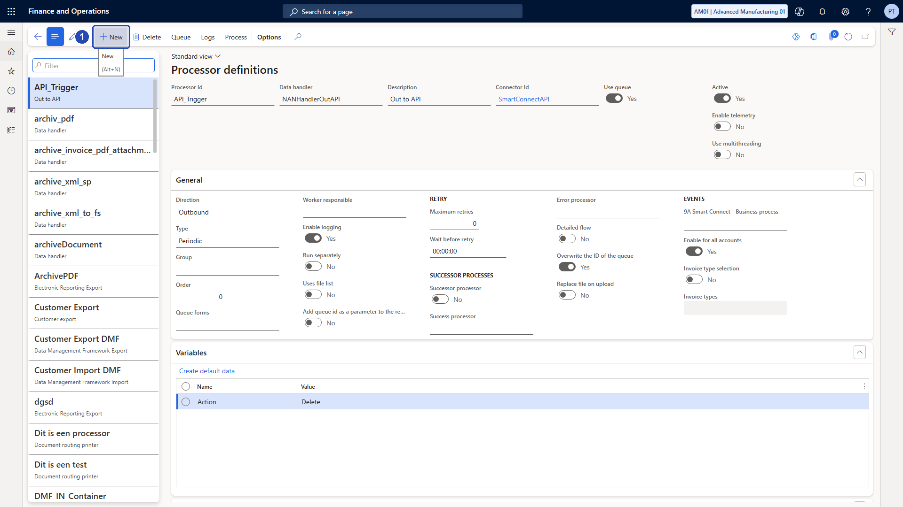
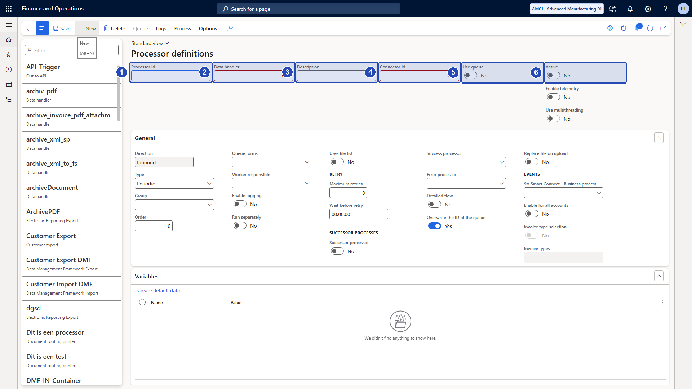
- Enter a unique Processor Id
- Select the Data handler
- Enter a Description
- Select the Connector Id
- Enable Use queue for reliable retries
- Set Active = Yes when ready, then Save
Processor groups
A Processor group coordinates the execution of several processors as a set. The classic example: sales orders arriving in two files — one with the header and one with the lines — where the headers must be created before the lines.
| Field | Meaning |
|---|---|
| Name | A unique name for the processor group. |
| Description | A description for the group. |
On each member processor you then set:
- Group — the group the processor belongs to.
- Order — the sequence within the group (e.g.
1headers,2lines). - Run separately — ensure members do not run simultaneously, so headers are always created before lines.
Schedule one batch for the whole group. When you run processors and choose a Processor group, all its members run in the defined order.
Setup & parameters
Several elements are configured once and apply across processes.
Parameters
| Parameter | What it does |
|---|---|
| Maximum retries | The retry limit for processing a message before it is abandoned. |
| Override event deletion | By default, successfully processed events are deleted. Enable this (e.g. during testing) to keep them. |
| Use Azure Key Vault | Switch credential fields (Client ID, Secret …) from plain-text entry to selections from the standard D365 F&O Key Vault setup. Recommended for production. |
| Full global error | When No, only the error message is shown; when Yes, the full stack trace is displayed. |
| VAT / registration number search option | Search by VAT number, by registration number, or both. |
| Log connector | Write log files to an external application (e.g. Azure storage) using an existing connector. |
Plain-text secrets are acceptable only in non-production scenarios (e.g. early in a project before Key Vault exists). Once Key Vault is available, enable Use Azure Key Vault and move the secrets across.
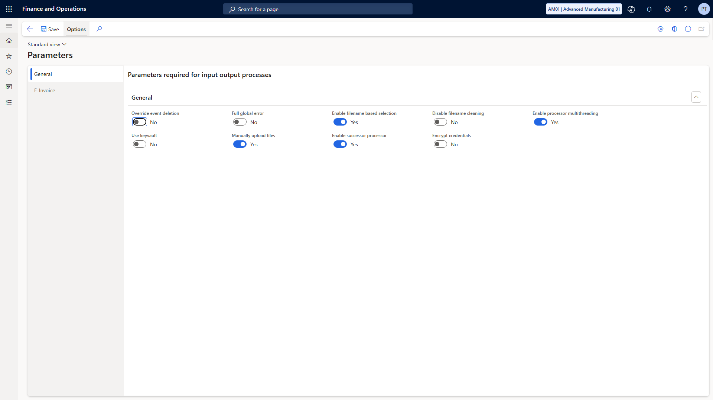
Several parameters are master switches — Manually upload files, Enable successor processor, Enable processor multithreading and Use keyvault. For every parameter and what each one reveals, see Global parameters — complete reference.
Process configuration
Process configuration links specific customers/vendors — or customer/vendor groups — to processors, so different partners can use different processes.
| Field | Meaning |
|---|---|
| Relation type | Customer, Vendor, Customer group or Vendor group. |
| Relation number | The specific record to form the relationship with, based on the relation type. |
| Processor Id | The processor to link to the relation. |
Attributes
Attributes let you attach custom key/value metadata to specific connectors and processors. Both the attribute name and its value are defined manually — a lightweight extensibility point for scenarios that need extra configuration.
Placeholders
Placeholders are a general-purpose mechanism that extracts values from a message with a regular expression. They have their own section — see Placeholders.
Placeholders (regex value extraction)
A Placeholder is a named regular expression that runs against a field of a queue message (usually the Payload) and stores the captured text under a reusable token. It is a general mechanism used across the whole framework — for example to supply the lookup value on a Raptor mapping, or to lift a reference out of an inbound file onto the queue record.
Maintain placeholders under Setup > Placeholders.
| Where | Field | Meaning |
|---|---|---|
| Header | Placeholder | The token, e.g. %InvoiceIdMYSUPPLY% — what you reference in templates. |
| Description | Free-text description. | |
| Line | Reference field name | The queue field the regex runs against (e.g. Payload). |
| Regex | The .NET regular expression; the matched text becomes the value. |
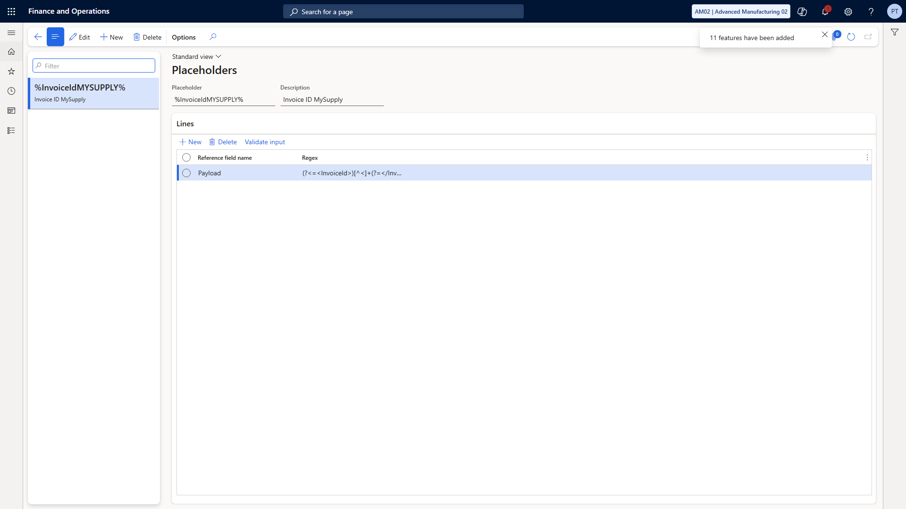
How it works: NANPlaceholderLine.getValueFromPlaceholder() compiles the Regex and runs regex.Match(value), returning the matched text. NANHelper::PlaceholdersGetMap() builds a map of every placeholder → its extracted value for a record, and NANHelper::PlaceholdersExpandString() substitutes those tokens inside a template string.
(?<=<InvoiceId>)[^<]+(?=</InvoiceId>) captures the text between the XML tags: (?<=<InvoiceId>) is a look-behind (must be preceded by <InvoiceId>), [^<]+ grabs everything up to the next <, and (?=</InvoiceId>) is a look-ahead (must be followed by </InvoiceId>) — so only the id value is returned, tags excluded.
Periodic tasks
Periodic tasks are the batch-schedulable operations of Smart Connect.
Run processors
The Run processors function executes processors — periodically in batch or manually on demand.
| Dialog field | Behaviour |
|---|---|
| Processor group | Run a specific group. Leave empty to run all processors that are not part of a group. |
| Processor Id | Run one specific processor. Leave empty to run all active processors. |
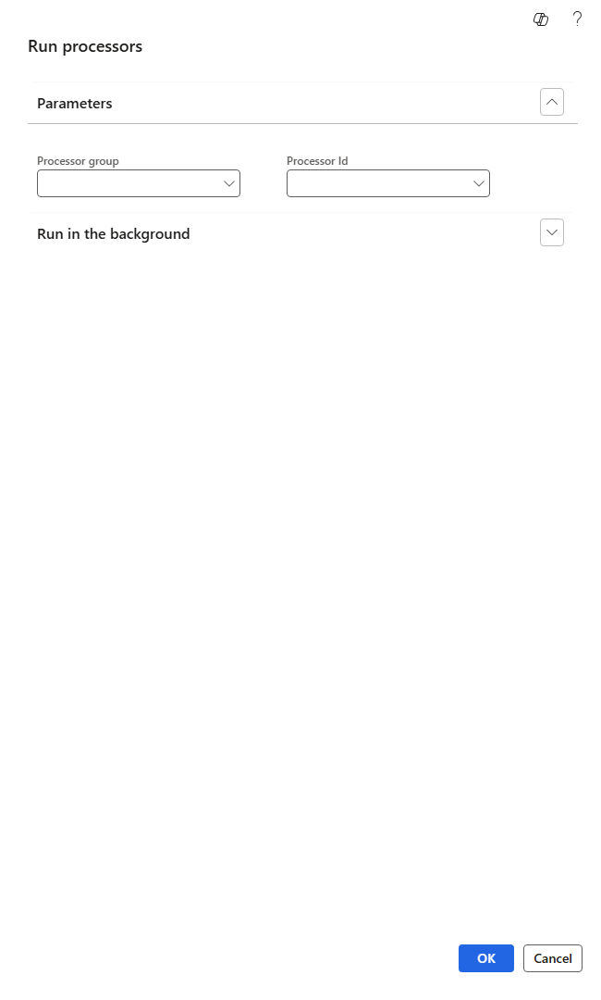
Clear / cleanup logs
Purges outdated logging data. The Days parameter removes logs older than the specified period. Schedule this in batch to prevent unnecessary storage costs and keep the log manageable.
Cleanup queue
Removes queue items older than the number of days set in the Older than field. The cleanup status determines what is removed:
All Processed / Cancelled Processed / Cancelled / Error
Electronic reporting process
Lets you select an Electronic Reporting configuration to be processed in batch.
Always schedule the log and queue cleanup jobs. They keep the tables lean, which protects performance and controls storage cost.
Queue, events & logs
These inquiry forms let you monitor, retry and troubleshoot everything Smart Connect does.
Queue
The queue holds messages so they can be retried if a process fails — for example if an authentication key expired during an export, the messages remain available for retry.
- Process — manually trigger a pending/failed message.
- Cancel — cancel a message you no longer want sent.
- Log / Info / Data management — inspect what happened to the message, including the direct and deferred responses where available.
- View content — view the document contents held on the queue.
Only content that can be serialised to/from a string is supported on the queue — such as XML, JSON and CSV.
Queue statuses:
Pending Processed Error Cancelled
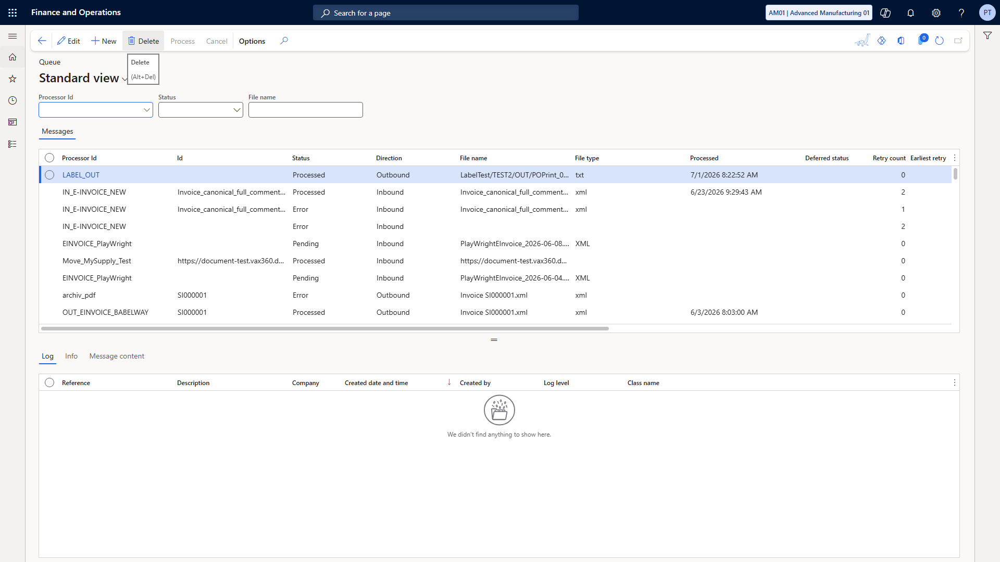
Events
Events create a record for later processing (asynchronous). When the batch job runs, events are processed and information is sent to the target system. An event does not contain the payload itself — it simply records what action must be taken. Use the Send event button to test.
Logs
All errors are logged automatically and can be queried here. If information logging is enabled in Parameters (or on the processor), information messages appear here too.
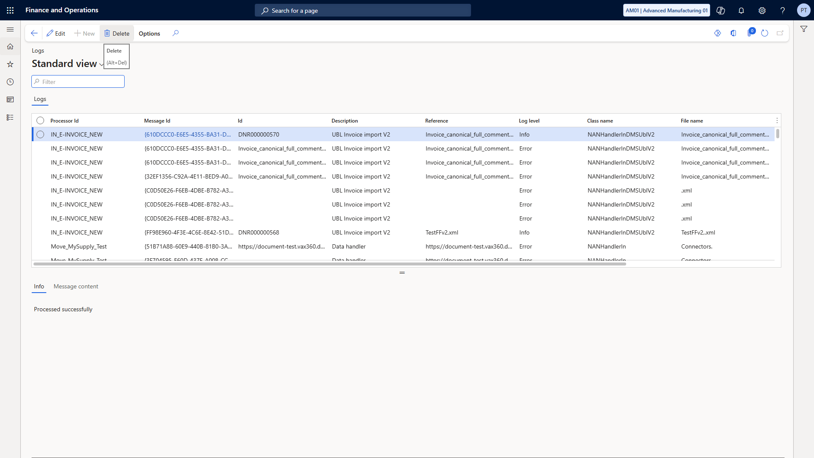
Data Management Framework
Smart Connect is designed to leverage the standard F&O Data Management Framework (DMF). Any DMF definition group — for any standard or custom data entity — can be driven by a processor, in or out.
Example: export customer email addresses to Azure file storage
- Connector — create a connector configured for Azure file share, authenticated with a connection string.
- Processor — create a processor using the
NANHandlerOutDmfdata handler and the connector from step 1. It exports through your DMF export project and sends the result to Azure file storage. - Variables — on save, two variables are created automatically:
- Definition group — pick your DMF export project from the lookup.
- Directory — the Azure file-share folder for the export file. If left blank, the file lands in the root directory.
- Run — from Periodic tasks > Run processors, select the processor. The export runs as defined in the DMF project and the result is delivered to the specified location.
When exporting via DMF with several entities in a definition group, set the sequence explicitly and start from 1.
Reporting (ER & SSRS)
Electronic Reporting destination
When setting up Electronic Reporting destinations, Smart Connect adds an extra option to the destination settings called 9A Smart Connect. Point it at a processor, and the ER output is processed according to that processor's setup.
Find it under Electronic Reporting workspace > Related links > Electronic reporting destination. Select the configuration and set:
- Process — the processor that should handle the Electronic Report output.
SSRS print destination settings
Similarly, when choosing the print destination of an SSRS report, Smart Connect adds an extra destination that routes the report to a processor — for example sending a PDF to Azure Storage when a customer invoice is posted. Configure it under the module's Print management setup:
| Field | Meaning |
|---|---|
| Processor | The processor that should handle the SSRS output. |
| File format | The format of the file to generate and send to the processor. |
Worked example: sales invoice to Azure File share
This end-to-end example sends a posted sales invoice PDF to Azure storage.
1 · Connector
Create a connector of type Azure File Share, authenticated with a connection string.
Connector — INV-AZURE
| Field | Value |
|---|---|
| Connector Id | INV-AZURE |
| Type | Azure file share |
| Azure storage authentication | Connection string |
| Storage name | mycompanystorage |
2 · Processor
Create a processor using the built-in SSRS Print Destination data handler and the connector above. Set it to Active. Type and Direction are dictated by the handler and cannot be changed manually.
Processor — SI-EXPORT
| Field | Value |
|---|---|
| Processor Id | SI-EXPORT |
| Data handler | Print destination (SSRS) |
| Connector Id | INV-AZURE |
| Direction | Outbound |
| Active | Yes |
3 · Variables
Complete the handler's predefined variables — these are used during execution:
| Variable | Example | Purpose |
|---|---|---|
| Directory | Sales Invoices |
Target folder in Azure file storage. |
| Prefix | INV |
Text prepended to the file name for easy identification. |
| Postfix | INV |
Text appended to the file name. |
| Table | CustInvoiceJour |
The underlying table the SSRS report is based on (must be specified for external printing). |
Now, whenever a customer invoice is posted and printed to the 9A Smart Connect destination, the PDF is delivered to the Sales Invoices folder in Azure.
Azure storage guide
Choosing the right Azure storage type is important; the proper implementation depends on how the files are used.
| Type | Best for | Folder structure | Typical use |
|---|---|---|---|
| File share | Everyday file handling and manual up/download | Multi-level folders | Users interacting with files; attach to external processes. Most popular option. |
| Container | High volume of small/medium files processed automatically | Single folder depth | Service processes; the only supported option when using a Logic App for FTPS. |
| Blob | Large files needed infrequently | No folder structure | e.g. a complete stock file generated every morning at 00:30. |
File / DMF file formats
With DMF you can choose the format — XML element, XML attribute, CSV, Excel, and so on. Experience suggests:
- CSV — excellent for quick, straightforward import/export of large volumes. Avoid it when users will open the file, because regional settings in Excel can alter the data.
- XML — preferred when user interaction is involved; it is more robust.
E-invoicing overview
E-invoicing is the flagship use case of 9A Smart Connect. Two country solutions are documented here: Belgium (Peppol, via a certified middleware) and France (the MySupply / Chorus Pro distributor model).
Both share the same foundations — connectors, processors, handlers and the queue — and both archive documents into the 9A Raptor Document Warehouse (DWH) so that every invoice, inbound or outbound, is traceable.
Belgium — Peppol — middleware · UBL
Invoices flow through a Peppol-certified middleware (e.g. Babelway). Inbound uses NANHandlerInDMSUbl / …V2; outbound uses Electronic Reporting (UBL Sales Invoice BE) sent to the 9A EDI destination.
France — MySupply — distributor · InExchange
A distributor model with dedicated connectors (MySupply Out/In/Confirm), event-driven ER generation outbound and a period-transfer orchestrator inbound.
E-invoicing requires 9A Smart Connect, 9A Smart Connect DMS and 9A Raptor to be installed in the D365 environment.
E-invoicing — Belgium (Peppol)
Belgian e-invoices are exchanged over the Peppol network through a certified middleware (Babelway in the reference implementation). The middleware talks to D365 through a Smart Connect API connector.
flowchart LR
PN["Peppol network"]
MW["Middleware (Babelway)"]
subgraph SC["9A Smart Connect (D365)"]
Q[("Queue")]
HIN["NANHandlerInDMSUbl / V2"]
HOUT["NANHandlerOutER / OutDMSUbl"]
ER["Electronic Reporting - UBL Sales Invoice BE"]
end
RAP["9A Raptor DWH - All invoices"]
FO["Finance & Operations"]
PN --> MW --> Q --> HIN --> RAP
HIN --> FO
FO --> ER --> HOUT --> MW --> PN
Incoming
Incoming e-invoices
The middleware receives the Peppol UBL and pushes it into the Smart Connect queue, where it is processed into a purchase invoice (the All invoices screen) and archived to Raptor.
Connector (middleware API)
Connector — BABELWAY
| Field | Value |
|---|---|
| Type | API |
| Authentication type | Basic |
| Client Id / Username | (from middleware) |
| Resource URL | https://eu1.babelway.net/rest/{user}/message |
Processor
- Data handler =
NANHandlerInDMSUbl(orNANHandlerInDMSUblV2) - Use queue = Yes · Active = Yes · Type = Event
- Queue forms =
EXAPurchInvoiceImported - 9A Raptor DWH tab = optionally archive XML & PDF
The processor name must be communicated to the middleware, together with an Entra ID app registration (environment URL, client ID, tenant ID, secret) so the middleware can authenticate to D365.
Schedule a recurring batch to archive the embedded-PDF attachment of the e-invoice into Raptor. If a vendor does not include a PDF, the middleware can generate one from the Peppol content.
Outgoing
Outgoing e-invoices
Outbound Belgian e-invoices are produced by Electronic Reporting and routed to the middleware through the 9A EDI ER destination.
- Connector — reuse the middleware API connector from the incoming setup.
- Processor — data handler =
NANHandlerOutER(standard) orNANHandlerOutDMSUbl(adds Raptor archiving of the generated e-invoice + embedded PDF and template tags). Use queue = Yes, Active = Yes. - Electronic Reporting — import UBL Sales Invoice BE (and the Invoice model mapping) from the repository; register it in the AR parameters.
- ER destination — in the ER workspace, open Electronic reporting destination and set the UBL Sales Invoice BE output to the 9A EDI destination (the processor).
- Customer — tick the eInvoice checkbox (and optionally eInvoice attachment for an embedded PDF).
- Post — post a sales invoice with Print management = Yes; the e-invoice is generated and sent. The Sent electronically column is marked on the invoice journal, and you follow up in the Queue.
A dedicated ER variant (the “KS” embedded-PDF configuration, from the SmartConnect SharePoint) takes the PDF from Raptor instead of the invoice-journal attachment. When you use it, leave the customer's eInvoice attachment flag off.
V2 improvements
What is new in V2 (NANHandlerInDMSUblV2)
V2 wraps V1 (no regression risk) and restructures inbound processing into resumable steps.
- Archive first — the XML (and attachments) are archived to Raptor as the first step, linked to the queue record by its unique id. Documents are therefore reviewable in Raptor even if processing later fails. A processor parameter chooses XML only, XML + attachments or attachments only.
- Better vendor lookup — vendors are matched on both the Peppol endpoint ID and the company ID, supporting KBO, VAT and GLN numbers (GLN via the Global Location Number on the registration-ID form). You can also set the vendor directly on the queue record and reprocess a “no vendor found” invoice without touching the XML.
- Split error flow — processing is split into sub-processes with six defined stop points; reprocessing resumes at the point of failure, preventing duplicates. A process-step field on the queue tracks progress.
- PO-number regex — purchase-order numbers in the XML can be transformed by regex: strip to the essential number, then map to predefined number formats (per vendor, vendor group, or all). Formats are tried by sort order until one matches a PO in
PurchTable. Requires the newest Raptor (it stores the original XML value for validation).
flowchart TB
S1["1 · Archive XML to Raptor"]
S2["2 · Archive attachments"]
S3["3 · Vendor lookup (endpoint id + company id)"]
S4["4 · Create all-invoice + assign POs"]
S5["5 · Tag archived documents"]
S6["6 · Reinitialize invoice rules"]
S1 --> S2 --> S3 --> S4 --> S5 --> S6
S1 -. error .-> E["Queue = Error (resume at step)"]
S2 -. error .-> E
S3 -. error .-> E
S4 -. error .-> E
S5 -. error .-> E
S6 -. error .-> E
Middleware contract
Middleware contract
The middleware transforms the received Peppol UBL and posts it to Smart Connect's inbound service. OAuth is used for authentication.
POST body → NANProcessInService/setQueueJSON
{
"request": {
"DataAreaId": "Company Code",
"ProcessId": "Processor Name",
"PayLoad": "[UBL]",
"FileType": "XML",
"FileName": "UBL_NAME.xml"
}
}
Flow: Peppol → Middleware → POST /api/services/NANProcessServiceGroup/NANProcessInService/setQueue → Queue
E-invoicing — France (MySupply)
The French solution integrates with the MySupply distributor (InExchange canonical format). It uses three dedicated connectors and archives everything to the 9A Raptor Document Warehouse.
MySupplyDiagram.drawio — Open the original diagram in draw.io
Outbound
E-invoice generation on posted journals — Sales invoice, Sales credit note, Project invoice, Project credit note — plus a Confirm download step.
Inbound
An Orchestrator (period transfer), an E-invoice in handler, and an Archive document in step to Raptor and F&O.
Connectors
MySupply Out, MySupply In and MySupply Confirm (API connectors).
Outbound flow
Posting an invoice/credit note raises a Smart Connect event. The event is processed in batch by NANHandlerOutGenerateER, which runs an Electronic Reporting template (a different template per invoice type) to produce the MySupply UBL. The result is queued and delivered to the MySupply outbound queue.
flowchart LR
IJ["F&O invoice journals - cust / proj"]
PAY["Payment entry"]
EV["Smart Connect events - record id + table"]
GER["NANHandlerOutGenerateER - ER template per type"]
Q[("Smart Connect queue")]
MO["MySupply Out connector"]
MSQ["MySupply outbound queue"]
IJ --> EV
PAY --> EV
EV --> GER --> Q --> MO --> MSQ
Trigger points are extensions on the posting classes (e.g. SalesInvoiceJournalPost_NAN_Extension, ProjInvoiceJournalPost) which call NANBusinessProcessEventCreateService::execute() to create the NANProcessorEventTable record. The generated document is archived to Raptor (target format linked to the invoice journal), and a separate confirm-download processor (NANHandlerOutMySupplyDownloadConfirmation) acknowledges receipt.
Inbound flow
An orchestrator processor (a period transfer of type MySupply, using a connector of type Raptor) repeatedly fetches documents from the MySupply outbound queue until it is empty. Each document is handled by NANHandlerInMySupplyDistributor, which delegates to the DMS import handler, archives to Raptor and updates F&O, then confirms the download.
flowchart LR
MSQ["MySupply outbound queue"]
MI["MySupply In connector - GET document"]
ORCH["Orchestrator - period transfer, Raptor connector"]
DIST["NANHandlerInMySupplyDistributor"]
DMS["NANHandlerInDMSMySupply - 5 steps"]
RAP["9A Raptor - All invoices + DWH"]
FO["Finance & Operations"]
MC["MySupply Confirm connector"]
MSQ --> MI --> ORCH --> DIST --> DMS
DMS --> RAP
DMS --> FO
DIST --> MC --> MSQ
The three MySupply connectors
| Connector | Direction | Purpose |
|---|---|---|
| MySupply Out | out | Delivers the generated e-invoice (UBL) to MySupply. |
| MySupply In | in | Fetches inbound documents from the MySupply outbound queue (GET document). |
| MySupply Confirm | out | Confirms the download of a document so it is not fetched again. |
Inbound handler variables (NANHandlerInMySupplyDistributor)
ProcessorEInvoice ProcessorStatusUpdate ProcessorArchival ProcessorDownloadConfirmator LogSummary ProcessOnlyOneDocument
The distributor handler orchestrates sub-processors: the DMS e-invoice import, the status update, the Raptor archival and the download confirmation. The MySupply payload is a JSON contract (NANMySupplyDistributorContract: base64File, fileName, id); NANMySupplyArchiveManager and NANBase64FileDetector extract and type each document, and NANXmlHelper_MySupply navigates the InExchange namespaces.
Purchase-order recognition (regex)
On an inbound purchase e-invoice the supplier rarely quotes a clean D365 purchase-order number. Smart Connect recovers it in two steps, both maintained from the processor's Regex button: first a regex extracts the raw number from the reference text, then a number sequence reshapes it into the real PurchId and validates it against open orders.
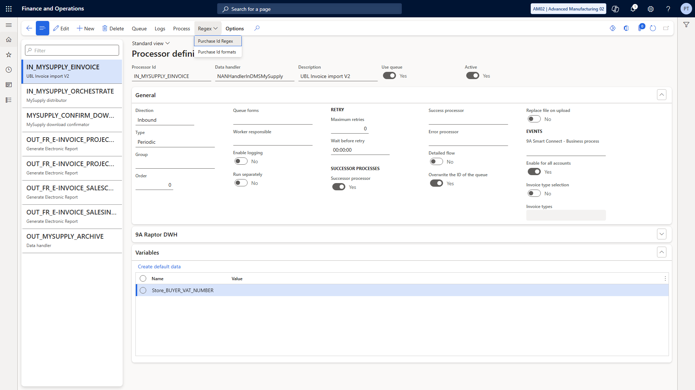
Step 1 — Regex (extract the number)
The Purchase Id Regex table holds, per processor and per Account type, the pattern that pulls the raw PO number out of the supplier's reference. NANExaPurchRegexTable::findBestMatch(vendor) picks the most specific rule — vendor → vendor group → all.
| Field | Meaning |
|---|---|
| Account type | Scope of the rule: Table (one vendor), Group (a vendor group) or All vendors. |
| Vendor relation | The vendor account or vendor group the rule applies to (blank for All). |
| Regex | The pattern that extracts the PO number(s) from the reference text. |
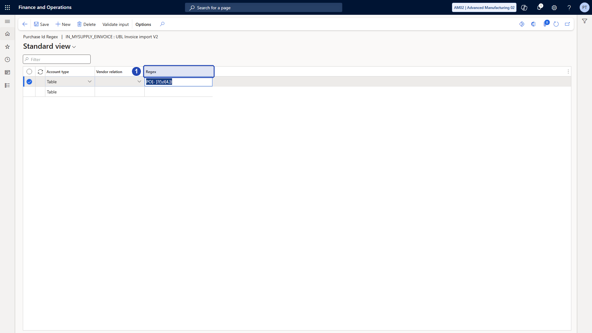
getPurchIdFromReference() compiles the regex, runs it over the reference and iterates every match (match.NextMatch()); each captured candidate is passed to step 2.
Step 2 — Number sequence (reshape & validate)
The Purchase Id formats table holds one or more number-sequence formats — the same masks D365 uses for number sequences, where # is a digit and & is a letter. NANExaPurchFormatTable::validateReference() takes each candidate from step 1 and, for every format in Sort order, rebuilds a full PurchId with numInsertFormatInternal(), then checks PurchTable::exist(). The first format that yields an existing purchase order wins.
| Field | Meaning |
|---|---|
| Format | A number-sequence mask (# = digit, & = letter), e.g. PUR-######. |
| Sort order | The order in which formats are tried; the first that resolves to a real PO is used. |
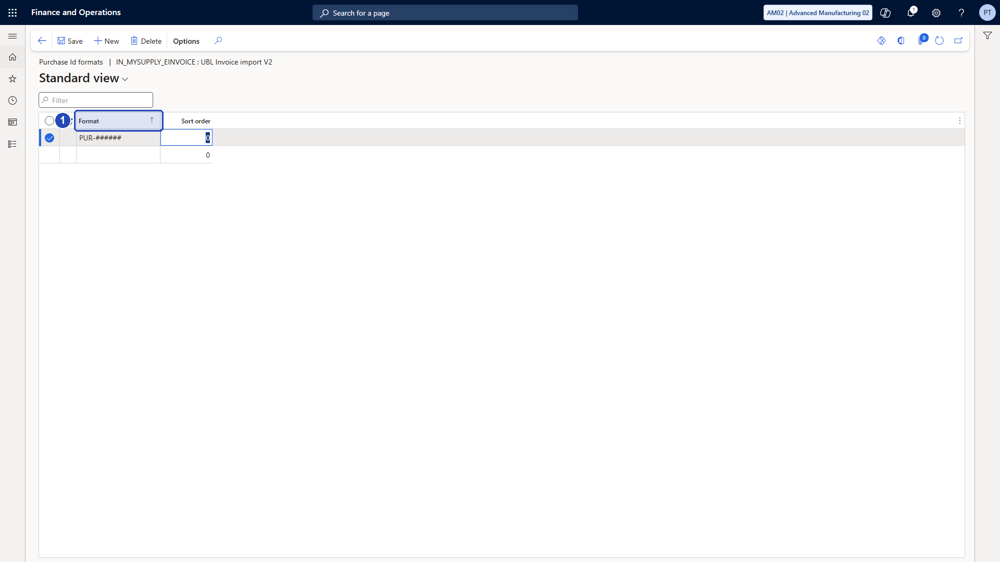
End to end
flowchart LR
REF["Supplier order reference"]
BEST["findBestMatch - vendor / group / all"]
RGX["Step 1: Regex - extract raw number"]
FMT["Step 2: Number-sequence format"]
VAL{"PurchTable exists?"}
SET[("Matched PurchId")]
REF --> BEST --> RGX --> FMT --> VAL
VAL -- yes --> SET
VAL -- no, next format --> FMT
The UBL handler (NANHandlerInDMSUblV2) first tries the invoice's own OrderReference / BuyerReference, and only falls back to this two-step regex/format when there is no direct match.
Handler catalogue
The data handler is the heart of a processor — it decides what the data is and which D365 components are involved. This catalogue documents each supported (out-of-the-box) handler: what it does, its direction and trigger, the connector(s) it works with, the components it uses, and its setup variables.
Each entry shows a flow chain: the source component → the handler → the components it drives → the transport. Handlers marked “no connector” do the transport themselves (e.g. DMF, archiving) or hand a payload to the processor's connector.
Outbound handlers
Click any handler card to expand the full detail. out = extends NANHandlerOut.
NANHandlerOutDR
out · Event · Direct — Document routing printer — WHS labels
Routes a WHS/warehouse label payload to any Smart Connect processor synchronously, without interrupting the standard D365 WHS print flow. The handler is a transparent pass-through — stream and filename are injected by NANDocumentRoutingLabels before the handler starts.
When is it triggered?
Every time D365 Warehouse Management prints a WHS label (license plate, container, shipment, wave, work). The extension WhsDocumentRouting_NAN_Extension intercepts printLabelPrintCommandToPrinterWithEncoding() and hijacks the label body before it reaches the physical printer. Compatible with WhsCustomLabelPrintService for third-party label APIs.
Complete flow (numbered steps)
| # | What happens | Class / object |
|---|---|---|
| 1 | D365 WHS label print initiated (pack, license plate, wave…) | WhsDocumentRouting::printDocument() |
| 2 | Extension captures label layout ID into a thread-static buffer | WhsDocumentRouting_NAN_Extension → NANDocumentRoutingStatic::labelLayout |
| 3 | Label print command generated; context singleton captures layout | WhsLabelPrintCommandGenerator_Class_NAN_Extension → NANWhsLabelPrintCommandGeneratorContext |
| 4 | Optional — custom label service pre-handler buffers contract | WhsCustomLabelPrintService_Events_NAN → NANDocumentRoutingStatic::CustomContract |
| 5 | NAN intercepts the printer send; resolves layout + printer template | NANDocumentRoutingLabels::process() |
| 6 | Looks up NANLabelPrinterTemplateTable for a wrapper template containing $body$ |
NANLabelPrinterTemplateTable::find(printerName) |
| 7 | If WHSLabelLayout.NANAzurePath set, prepends Azure folder to filename |
Custom field on standard table |
| 8 | Instantiates handler; sets UTF-8 encoded label stream + filename | NANHandlerOutDR.setStreamContentAndFilename() |
| 9 | Creates and runs a Direct processor synchronously (no-throw so WHS is not blocked) | NANProcessorOutDirect.setNoThrow(true) |
| 10 | Payload delivered to the configured connector (Blob, File share, API, queue) | NANConnecter.execute() |
| 11 | Static buffers cleared; D365 continues normal print | NANDocumentRoutingStatic::labelLayout = null |
Setup table: NANLabelPrinterTemplateTable
| Field | Type | Purpose |
|---|---|---|
PrinterName |
WHSPrinterName (PK) | Printer identifier from WHSSysCorpNetPrinters |
Template |
Str1260 | Wrapper with $body$ placeholder for the raw ZPL/label content |
Custom field added to standard table
| Standard table | Field | Label | Purpose |
|---|---|---|---|
WHSLabelLayout |
NANAzurePath (String255) |
Azure directory extension | Azure folder prepended to the filename when routing labels to cloud storage |
Variables: none (stream/filename injected externally)
NANHandlerOutER
out · Event — Electronic Reporting export
Receives ER-generated content (stream + filename) and forwards it to the processor's connector. The ER framework generates the document; this handler is the bridge that gets it into Smart Connect. Base class for NANHandlerOutDMSUbl and NANHandlerOutDMSProjectInvoice.
Flow: ER format run → NANHandlerOutER → Connector
Configure an ER destination of type 9A Smart Connect and set the processor. When the ER format runs, output is handed to this handler. The 9A Smart Connect print medium is registered as SRSPrintMediumType.NANEdi.
Variables: none · Connector: any file/API type
NANHandlerOutPD
out · Event — Print destinations (SSRS) export
Receives a pre-generated SSRS report from the 9A Smart Connect print destination and forwards it via the connector. Triggered when a report is printed with the 9A Smart Connect output type selected in Print Management.
Flow: SSRS print → Print Management → 9A Smart Connect → NANHandlerOutPD → Connector
Variables: Directory, Prefix, Postfix, Table · Enum ext: SRSPrintMediumType.NANEdi
NANHandlerOutAPI
out · Event — Out to API
Generic REST API output handler. The Action variable sets the HTTP verb; the processor payload is the request body.
Flow: Payload → NANHandlerOutAPI → API connector → HTTP endpoint
Variables: Action (GET/POST/PUT/PATCH/DELETE/HEAD/OPTIONS) · Connector: API
NANHandlerOutGenerateER
out · Event — Generate Electronic Report (active ER execution)
Unlike NANHandlerOutER (receives already-generated ER output), this handler actively runs the ER format itself. It is the engine behind MySupply and Peppol outbound e-invoicing — one processor per invoice type, each with its own ER format mapping.
Flow: Event (source record) → NANHandlerOutGenerateER → ERObjectsFactory runs format → NANERFileDestinationInMemory → Connector
Binds ERModelDefinitionDatabaseContext to the source record (e.g. CustInvoiceJour), runs via ERFormatMappingRun in-memory, and sets the result as payload.
Variables: ERFormatMappingId · Connector: any
NANHandlerOutDmf
out · Event · loop — Data Management Framework export
Runs a DMF definition-group export, then iterates the exported files (downloading from Azure Blob) returning them one-by-one to the connector. Sets loop = true while more files remain.
Flow: NANHandlerOutDmf → DMF definition group export → NANDmfExport → Blob download (per file) → Connector
Variables: DefinitionGroup · Note: when exporting multiple entities, sequence must start at 1
NANHandlerOutDmfXmlToJson
out · Event · loop — DMF export XML → JSON
Extends NANHandlerOutDmf. After the DMF export converts XML to JSON via Newtonsoft JsonConvert::SerializeXmlNode and overrides the extension to .json.
Variables: DefinitionGroup · Extension: auto-set to json
NANHandlerOutPaymentFile
out · Periodic — Payment file export
Scheduled export producing a UTF-8 CSV with a timestamped filename. Type is explicitly Periodic (not event-driven).
Variables: none · Type: Periodic
NANHandlerOutTungstenVendors
out · Event — Tungsten vendors export
Reads VendTable + postal addresses, maps to Kofax supplier model, serialises for Tungsten.
| Source | Target (Kofax supplier) |
|---|---|
| AccountNum | SupplierNumber |
| Name | Name |
| NameAlias | Description |
| VATNum | VATNum |
| PostalAddress.Street/ZipCode/City/Country | Address fields |
| PaymentTermId, PaymentMode, Currency | Payment fields |
Variables: none · Connector: Tungsten/Kofax
NANHandlerOutTungstenVendorBanks
out · Event — Tungsten vendor banks export
Reads VendBankAccount (joined to VendTable), validates IBAN/account number, serialises to Kofax bank-account model.
| Source | Target | Note |
|---|---|---|
| VendTable.AccountNum | SupplierNumber | |
| BankIBAN → AccountNum (fallback) | AccountNumber | IBAN preferred |
| IBAN present? | AccountNumberType | iban / bankgiro |
| BankName | BankName |
Variables: none · Warning logged if both IBAN and account number missing
NANHandlerOutWFVendors
out · Event · PIW — Readsoft online export vendors
Queries PylWFExportReadSoftOnlineVendor, maps vendor + address to Kofax supplier model (same as TungstenVendors, country hardcoded to 'NLD'), serialises via Kofax::SuppliersToStream().
Variables: none · Reference: 'vendors'
NANHandlerOutWFVendorBanks
out · Event · PIW — Readsoft online export vendor banks
Queries PylWFExportReadSoftOnlineVendorBank, maps vendor bank accounts to Kofax model, serialises via Kofax::SuppliersBankToStream().
Variables: none · Reference: 'vendorbanks'
NANHandlerOutDMSUbl
out · Event · DMS — 9A Raptor DWH — ER UBL export
Extends NANHandlerOutER. After receiving ER-generated UBL: parses XML → finds CustInvoiceJour → archives to Raptor.
| Step | Action | Processor flag |
|---|---|---|
| 1 | Parse UBL namespace (cbc/cac or n2/n1) | — |
| 2 | Extract /Invoice/ID → look up CustInvoiceJour |
— |
| 3 | Archive XML to Raptor DWH via NANExaUtils::uploadToDocWarehouseStream() |
NANExaArchiveXml = Yes |
| 4 | Extract + archive embedded PDF (base64 from XML) | NANExaArchivePdf = Yes |
| 5 | Forward UBL stream via connector | — |
Processor fields: NANExaDocumentTemplate, NANExaArchiveXml, NANExaArchivePdf
NANHandlerOutDMSProjectInvoice
out · Event · DMS — 9A Raptor DWH — ER project invoice export
Same as NANHandlerOutDMSUbl but targets ProjInvoiceJour; also decodes + archives a base64 image attachment if present.
Processor fields: NANExaDocumentTemplate, NANExaArchiveXml, NANExaArchivePdf
Inbound handlers
Click any card to expand. in = extends NANHandlerIn.
NANHandlerInDmf
in · Event — Data Management Framework import
Feeds the inbound payload stream into a standard DMF import for the configured definition group and entity. Records the DMF execution ID for log lookup.
Flow: File (CSV/XML/JSON) → NANHandlerInDmf → NANDmfImport → DMF definition group → D365 entity
Variables: DefinitionGroup, Entity
NANHandlerInDmfNoHeader
in · Event — DMF import — inject header
Extends NANHandlerInDmf. If the first line does not contain the expected header row (from processor.HeaderField), prepends it before running the DMF import — essential for header-less CSV feeds.
Variables: DefinitionGroup, Entity · uses processor.HeaderField
NANHandlerInER
in · Event — Electronic Reporting import
Validates the inbound payload and passes it to Electronic Reporting for import-side processing (e.g. bank statement import via ER). Minimal pass-through.
Variables: none
NANHandlerInDMSUbl
in · Event · DMS — UBL invoice import — V1
Parses Peppol UBL (namespace-aware: cbc/cac or n2/n1), resolves the vendor, creates an EXAPurchInvoiceImported record and archives. Single-pass — no step recovery on failure.
Field mappings: UBL XML → All invoices (EXAPurchInvoiceImported)
| UBL XML path | Transformation | Target field |
|---|---|---|
AccountingSupplierParty/…/EndpointID @schemeID=0088 |
GLN → VendTable::NANGetVendorFromGLN() |
VendAccount |
AccountingSupplierParty/…/EndpointID @schemeID≠0088 |
VAT/KBO → NANVatNumSql::getVendorFromVATRegNum() |
VendAccount |
…/PartyTaxScheme/CompanyID |
Fallback VAT lookup | VendAccount |
/Invoice/DocumentCurrencyCode |
Direct | CurrencyCode |
/Invoice/InvoiceTypeCode |
380 → Debit · other → Credit |
DebitCredit |
/CreditNote element exists |
Forces Credit | DebitCredit |
/Invoice/IssueDate |
str2Date(val, 321) |
DocumentDate + TransDate |
/Invoice/DueDate |
str2Date or dateNull() |
DueDate |
/Invoice/ID |
Direct | InvoiceId |
LegalMonetaryTotal/TaxInclusiveAmount |
str2Num() |
InvoiceAmount |
LegalMonetaryTotal/TaxExclusiveAmount |
str2Num() |
BaseAmount |
TaxTotal/TaxAmount |
str2Num() |
TaxAmount |
OrderReference/ID or BuyerReference |
PurchTable::exist() |
IsPurchaseOrder / PurchId |
InvoiceLine/CommodityClassification @listID='PO' |
Loop + validate each | PurchLinkEntity.PurchId |
| — | processor.ProcessId |
ReleaseUser |
| — | Hardcoded | Executed = Yes |
Invoice line (always one summary line)
| Source | Target line field |
|---|---|
| Invoice header DocNo | DocNo |
| First found PO | PurchId |
| Header amounts | TaxAmount, BaseAmount, InvoiceAmount |
| Hardcoded | Description = "Invoice Total Line" |
Variables: Store_BUYER_VAT_NUMBER · Queue table: none (single-pass)
NANHandlerInDMSUblV2
in · Event · 5 steps · DMS — UBL invoice import V2 — archive-first, resumable
V2 applies the same UBL → All invoices field mappings as V1 (see above) but adds five resumable processing steps, better vendor lookup, PO-number regex, and document tagging. State is persisted in NANQueueHandlerInDMSUblTable between retries.
Step breakdown
| Step | Action | On error — resume from |
|---|---|---|
| 1 | Archive XML to Raptor DWH linked to queue record (NANExaArchiveXml flag) |
Step 1 (full retry) |
| 2 | Archive attachments from AdditionalDocumentReference list; duplicate detection via existing Raptor tags |
Step 2 (skip step 1) |
| 3 | Vendor lookup (GLN → VAT/KBO → CompanyID) + importInvoice() + importInvoiceLines(). Save vendor + docNo to queue table |
Step 3 (skip archive steps) |
| 4 | Tag archived docs with All-invoices record → EXADocuHelper::addTagsFromToDocuments() |
Step 4 (skip 1–3) |
| 5 | Reinitialise invoice rules → purchInvoiceImportedEntity.reinitializeInvoice() |
Step 5 only |
V2 improvements over V1
| Feature | V1 | V2 |
|---|---|---|
| Raptor archive timing | Last step | First step |
| Vendor lookup | GLN only | GLN + VAT/KBO + DUNS |
| Manual vendor override | No | Yes — set from queue form |
| PO-number regex | No | Yes (NANExaPurchRegexTable) |
| Error recovery | Full restart → duplicates | Resume at failed step |
| Original PO text stored | No | Yes (audit trail) |
Queue state table: NANQueueHandlerInDMSUblTable
| Field | Type | Persists |
|---|---|---|
QueueId |
NANQueueId (PK/FK) | Links to NANQueueTable |
VendAccount |
VendAccount | Vendor resolved in step 3; reused in retries |
DocNo |
EXADocNo | All-invoices record id; used in steps 4+5 |
Variables: Store_BUYER_VAT_NUMBER
NANHandlerInDMSUbl_RO
in · Event · DMS — UBL invoice import — Romania
Romanian variant. InvoiceTypeCode 380 = Debit, any other = Credit. Maps all standard UBL amounts. Attaches documents inline rather than archiving to Raptor.
Variables: none · Note: code comment reads "DONT BLAME ME — duplicate code that consultant wants to keep"
NANHandlerInDMSTungsten
in · Event · DMS — Tungsten (Readsoft) invoice import
Parses Tungsten (Kofax) XML into a typed InvoiceHeader POCO (not raw XPath). Maps fields to All invoices, archives XML/PDF and optionally email to Raptor.
Field mappings (Tungsten InvoiceHeader → All invoices)
| Tungsten property | Transformation | Target field |
|---|---|---|
DebitCredit |
'Debit' → Debit; else Credit | DebitCredit |
IsPurchaseOrder |
'Yes' → Yes; else No | IsPurchaseOrder |
DocumentDate |
convertFromDateTime() → strip time |
DocumentDate, DueDate |
TransDate |
convertFromDateTime() |
TransDate |
InvoiceAmount |
Direct | InvoiceAmount |
CurrencyCode |
Direct | CurrencyCode |
VendAccount |
Resolved by Tungsten parser | VendAccount |
BaseAmount |
Direct | BaseAmount |
InvoiceId |
Direct | InvoiceId |
TaxAmount |
Direct | TaxAmount |
InvoiceOrderNumber |
PurchTable::exist() |
PurchId (line) |
LitOrderNumbersArray |
Loop + validate each | Additional PurchId links |
Variables: Store_BUYER_VAT_NUMBER · archives XML, PDF + optional email
NANHandlerInWFReadsoft
in · Event · PIW — Readsoft online XML/PDF import
Reads Readsoft XML, detects company from document content, switches D365 company context, creates PylWFVendInvoiceResource (OCR = Yes). Optionally attaches a secondary PDF payload. The resource is then processed by the PIW invoice workflow.
Variables: ResourceType → PylWFVendInvoiceResourceType.TypeId
NANHandlerInWFPeppol
in · Event · PIW — Peppol e-invoice import — PIW workflow
Reads Peppol UBL (unwrapping POST envelope if present), converts to PIW format via NANWFUblToIwf, creates PylWFVendInvoiceResource (OCR = Yes), attaches embedded document.
Use PIW (NANHandlerInWFPeppol) when invoices feed the PIW purchase invoice workflow engine. Use DMS (NANHandlerInDMSUblV2) when invoices feed directly into Raptor All invoices.
Variables: ResourceType
Connector — complete field reference
Every field that can appear on the Connector form, what it does, and exactly which fields the form reveals for each Type and each Authentication type. The connector form is adaptive: choosing a Type switches the form to that connection's tab, and choosing an Authentication type shows only that method's credential group. Changing the Type clears the credential/resource fields so stale values are never carried over.
All connector fields
Field names in monospace are the underlying table fields on NANConnecterTable. Several fields are re-labelled on screen depending on context (e.g. Client Id shows as Username for FTP).
| Field (on screen) | Table field | Type | What it does |
|---|---|---|---|
| Connector Id | ConnecterId |
Id | Unique identifier and primary key of the connector. Read-only once created. |
| Description | Description |
Text | Free-text name shown in lookups on the processor. |
| Type | ConnecterType |
Enum | The external system the connector talks to. Selecting it decides which connector subclass runs and switches the form to the matching tab. |
| Resource Url | ResourceUrl |
URL | Endpoint address — API base URL, FTP/SFTP host, or the Azure Blob/File share/Container URI. |
| Authentication type | AuthType |
Enum | How the connector proves its identity. Reveals the matching credential group (see below). |
| Client Id / Username | ClientId |
Text | OAuth client ID, FTP/SFTP username, or Azure Shared-Key account name. The label adapts to the Type/Auth. |
| Client secret / Password | ClientSecret |
Secret | OAuth client secret, FTP/SFTP password, SAS token or storage key. Hidden; encrypted or Key-Vault-backed. |
| Tenant | Tenant |
Text | Azure AD tenant ID (Azure / OAuth authentication). |
| Authorization Url | AuthUrl |
URL | OAuth token endpoint (or the AS2 MDN return URL). |
| Audience | Audience |
URL | OAuth audience / resource scope, used for Azure multi-tenant scenarios. |
| Scope | Scope |
URL | OAuth scope parameter (e.g. https://resource/.default). |
| Grant type | OAuthGrantType |
Enum | OAuth flow: Client credentials, Authorization code, Refresh token or Password. |
| Auth form encoded body | ContentTypeFormEncodedBody |
Enum | For form-encoded token requests: send Username/Password or Client Id/Secret in the body. |
| Bearer token | BearerToken |
Secret | A pre-shared bearer token for API Bearer authentication (an alternative to a full OAuth flow). |
| Username | Username |
Text | Username for Basic auth or the OAuth password grant. |
| Password | Password |
Secret | Password for FTP/SFTP or the OAuth password grant. Hidden. |
| Use token cache | UseTokenCache |
Yes/No | Cache the OAuth access token and reuse it until it expires, instead of requesting a new one every call. |
| Content type | ContentType |
Enum | API request body shape: String, Stream, ByteArray, FormUrlEncoded, SysUrlEncoded or FormDataFileStream. |
| Media type auth | MediaType |
Enum | The Accept / Content-Type header for API requests: application/xml, application/json or application/x-www-form-urlencoded. |
| Media type body | MediaTypeBody |
Enum | The Content-Type used for the API POST/PUT/PATCH body (separate from the header media type). |
| Post if update not found | UpdateNotFoundCreate |
Yes/No | API: if a PUT/PATCH returns 404 Not found, retry the call as a POST (create). |
| Timeout in seconds | TimeoutInSeconds |
Int | Connection timeout for API / SharePoint calls. |
| Enable response log | EnableResponseLog |
Yes/No | Store the connector/API responses for audit and debugging (see the queue response log). |
| Storage authentication | StorageAuthType |
Enum | Azure storage auth mode: SAS credential, Connection string or Shared Key credential. |
| Storage account name | StorageName |
Text | Azure storage account / container name (Connection-string mode). |
| Connection string | ConnectionString |
Secret | Full Azure storage connection string, or the Kofax/Tungsten connection string. Hidden; encrypted or Key-Vault-backed. |
| Port | Port |
Int | FTP/SFTP port (typically 21 for FTP, 22 for SFTP). |
| Enable SSL | EnableSSL |
Yes/No | FTP/SFTP: use FTPS / TLS encryption. |
| Trust self signed server certificate | TrustSelfSignedServer |
Yes/No | FTP/SFTP: accept a self-signed server certificate (skip validation). Use with care. |
| Use working directory | UseWorkingDirectory |
Yes/No | FTP/SFTP: organise files into working subdirectories. Changing it recalculates the processor's hidden variable list. |
| Disable filename cleaning | DisableFilenameCleaning |
Default/Yes/No | Per-connector override of the global filename-sanitisation setting: Default follows Parameters, Yes keeps names verbatim, No forces cleaning on. |
Which fields appear per connector Type
Each Type opens a dedicated tab and shows only the fields it needs. Types that authenticate (API, URL, AS2, SharePoint) additionally show an Authentication type selector; the Azure storage types (Blob, File share, Container) show a Storage authentication selector instead.
| Type | Form tab | Fields shown |
|---|---|---|
| URL | API / URL | Resource Url only (no authentication). |
| API | API / URL | Resource Url, Authentication type, Content type, Media type, Timeout, plus the selected auth group; optional custom headers. |
| Azure blob | Azure storage | Resource Url, Storage authentication, Storage account name / Connection string / account+key (per mode). |
| Azure file share | Azure storage | Same as Blob. Adds file-share sort options on the processor (see below). |
| Azure container | Azure storage | Same as Blob. |
| FTP | FTP | Resource Url (host), Port, Username, Password, Enable SSL, Trust self-signed, Use working directory, Disable filename cleaning. |
| SFTP | FTP | Same as FTP. Can authenticate with a certificate (see Certificates sub-table). |
| AS2 | AS2 | Resource Url, Authentication type + auth group, and signing/encryption Certificates. |
| Tungsten (Kofax) | Kofax | Resource Url, Username, Password, Connection string. |
| Babelway SOAP | Babelway | Resource Url, Username/Client Id, Password/secret. |
| SharePoint | SharePoint | Resource Url (site), Authentication type (OAuth / Azure / Audience only), auth group, Timeout. |
| Attachment / User interface | — | No connection fields — files are attached to a record or uploaded manually. |
Which fields appear per Authentication type
The Authentication type selector (API, AS2 and SharePoint tabs) reveals exactly one credential group:
| Authentication type | Fields revealed | How it is sent |
|---|---|---|
| Basic | Username, Password | Authorization: Basic base64(user:password) |
| Azure | Client Id, Client secret, Tenant, Authorization Url | OAuth 2.0 client-credentials against Azure AD (TLS 1.2+). |
| OAuth | Client Id, Client secret, Tenant, Authorization Url, Grant type, Scope, Auth form encoded body (if form-encoded); Username + Password only for the password grant | Standard OAuth token request; token optionally cached. |
| API key | Client secret (the key value) | Sent as an x-api-key header. |
| Audience | Audience | Azure AD flow where the resource/audience is specified separately. |
| Bearer token | Bearer token | Authorization: Bearer <token> |
See the form adapt — live examples
The same New connector form, with three different Types selected. Notice how each choice replaces the tab and reveals a different set of fields.
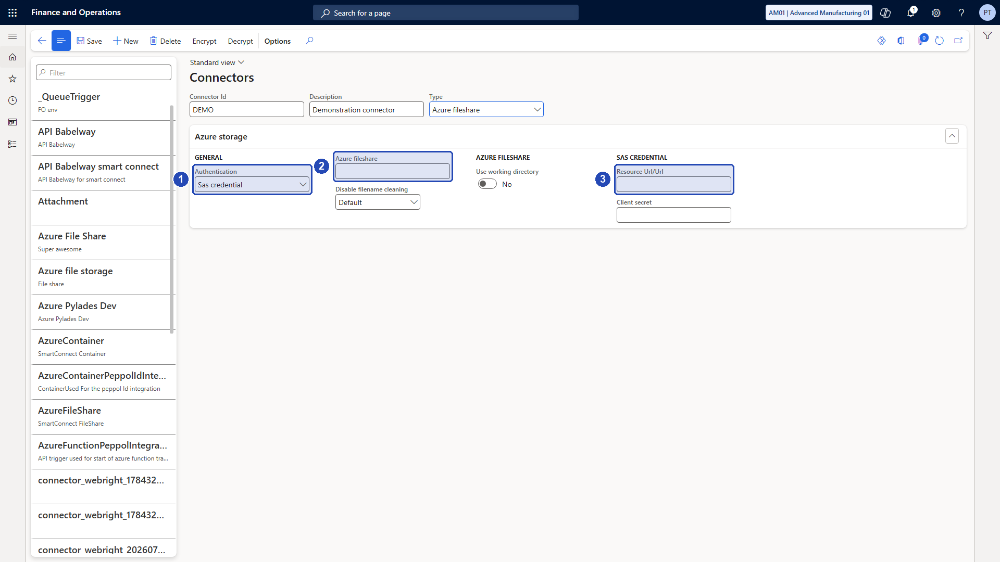
- Pick the Storage authentication mode (SAS / connection string / account key)
- Enter the storage account / share name
- Enter the Resource URL
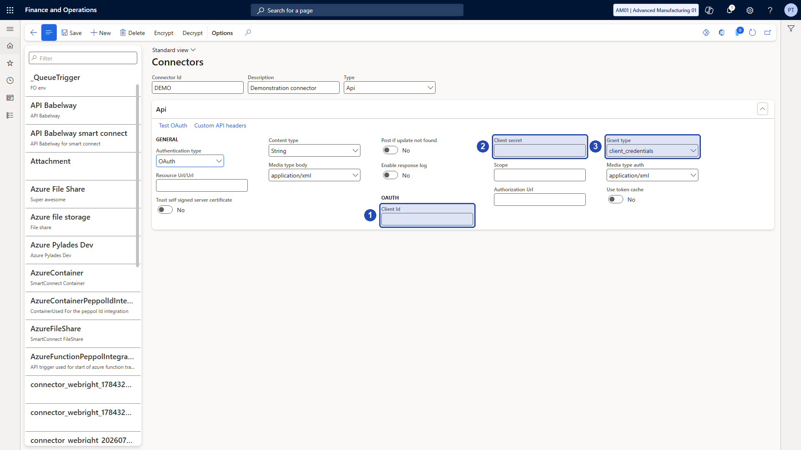
- Enter the Client Id
- Enter the Client secret
- Choose the Grant type (here, client_credentials) — Scope, Authorization URL and token cache are alongside
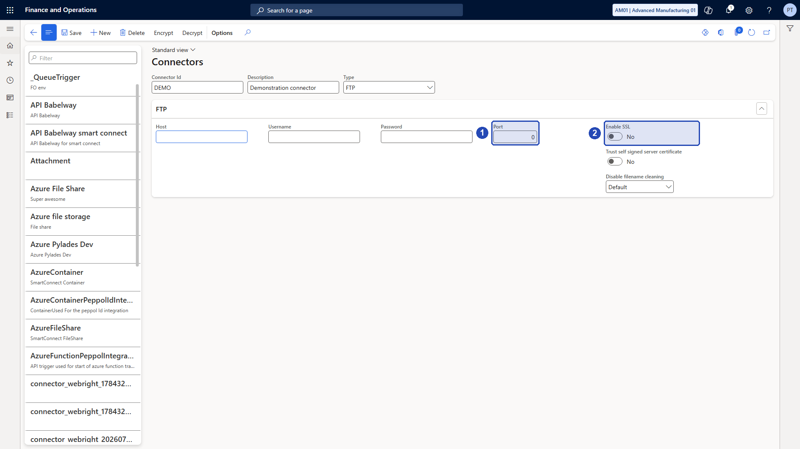
- The Port
- Enable SSL (with trust-self-signed and disable-filename-cleaning below)
Azure storage authentication modes
| Storage authentication | Fields used | When to use |
|---|---|---|
| SAS credential | Resource Url + Client secret (the SAS token) | Time-limited, scoped access without exposing the account key. Preferred. |
| Connection string | Connection string + Storage account name (container) | Quick setup where the full connection string is available. |
| Shared Key credential | Resource Url + Client Id (account) + Client secret (key) | Authenticate directly with the storage account key. |
Credential storage — encryption vs Key Vault
How the secret fields (Client secret, Connection string, Password) behave is driven by two mutually-exclusive global parameters. The form swaps the input control accordingly:
| Parameter state | Secret fields become… |
|---|---|
| Use keyvault = Yes | A Key Vault reference lookup — you pick a secret name from the standard D365 Key Vault setup; the value never lives in the database. |
| Encrypt credentials = Yes (Use keyvault = No) | A direct text box; the value is encrypted at rest with the environment key. |
| Both = No | A direct text box stored as-is. Acceptable only in non-production. |
Use keyvault and Encrypt credentials cannot both be on. Set them in Parameters; the connector form reads them in init() and shows either the Key Vault lookup or the direct input for every secret field.
Connector sub-tables
Certificates NANConnecterCertificateTable
X.509 certificates attached to a connector. Key: Connector + Purpose.
- Purpose — Authentication (client/login cert), Signing or Encryption (AS2 messages).
- Certificate — the binary PKCS#12/PEM certificate (hidden).
- Password — password that unlocks the certificate.
- Key Vault certificate ref — alternatively, a reference to a Key-Vault-managed certificate.
AS2 uses a Signing and an Encryption certificate; SFTP can use an Authentication certificate.
Custom API headers NANConnecterCustomAPIHeaderTable
Extra HTTP headers added to every request an API connector makes. Key: Connector + Header name.
- Header name — e.g.
X-Correlation-Id. - Header value — the value to send.
Added after the default Accept header when the request is primed.
Processor — complete field reference
The processor form is the most adaptive form in Smart Connect: most of its fields appear, hide, enable or become mandatory depending on the data handler, the connector type, the process type and a handful of global parameters. This section lists every field, then maps out exactly what each driver changes on the form.
All processor fields
| Field | Table field | What it does |
|---|---|---|
| Processor Id | ProcessId |
Unique identifier / primary key. Read-only once created. |
| Description | Description |
Free-text name of the process. |
| Data handler | HandlerId |
The NANHandler… class that shapes the data. Choosing it auto-sets Direction and rebuilds the Variables grid. The single most important choice on the form. |
| Direction | ProcessDirection |
Inbound or Outbound. Read-only — derived from the handler. Drives file-list vs unique-filename visibility. |
| Type | ProcessType |
Execution model: Event, Direct, Periodic, Periodic multiple or Periodic transfer. |
| Connector Id | ConnecterId |
The connector used to get/send data. Mandatory except for inbound Events and successor processors. |
| Connector Id (to) | ConnecterIdTo |
Secondary/destination connector — only for a Periodic transfer. |
| Use queue | UseQueue |
Enqueue messages so failures can be retried. Auto-enabled by two-stage import. |
| Active | IsActive |
Enable the processor once it is configured correctly. |
| Enable telemetry | EnableTelemetry |
Track this processor in telemetry (Application Insights). Only shown when a telemetry handler is configured. |
| Enable logging | EnableLogging |
Log every step (not just errors) — useful while testing. |
| Use multithreading | UseMultithreading |
Run the process in parallel worker threads. Only shown when multithreading is enabled globally. |
| Group | ProcessGroupId |
Assign to a processor group for coordinated scheduling. |
| Order | ProcessOrder |
Run sequence within a group/batch (e.g. headers before lines). |
| Run separately | RunSeparately |
Exclude from the primary batch so it can be scheduled on its own. |
| Use file list | FileList |
Fetch a list of files first, then process each separately (per-file error handling). Inbound only; auto-set from the connector. |
| Unique filename | FilenameUnique |
Add a unique suffix to each outbound file. Shown for outbound DMF / Peppol Data / ER handlers. |
| Replace file on upload | ReplaceFileOnUpload |
Overwrite an existing target file instead of erroring. Enabled only when the connector supports it (outbound). |
| Maximum retries | RetryMax |
How many times a failed message is retried before it is abandoned. |
| Wait before retry | RetryWaitTime |
Delay before the next retry attempt. |
| Worker responsible | WorkerResponsible |
Optional F&O worker responsible for monitoring the process. |
| Is successor processor | IsSuccessorProcessor |
Marks this processor as callable as a success/error successor. Shown when successors are enabled globally. |
| Success processor Id | SuccessProcessorId |
Processor to run after a successful completion. |
| Error processor Id | ErrorProcessorId |
Processor to run after a failure. |
| Detailed successor flow | DetailedSuccessorProcessorFlow |
Create a fresh queue record for the successor instead of passing the same one through. |
| Overwrite Id of queue | OverwriteIdOfQueue |
Successor inherits the parent's queue Id (default Yes). |
| Import two stage status | TwoStageStatus |
Two-stage DMF import (stage → process). Shown for DMF inbound handlers; auto-enables Use queue. |
| Skip queue execution | SkipQueueExecution |
Execute a processor without sending out the message to the connector. The result is a record in the queue in status pending. |
| Add queue Id to resource Url | AddQueueIdToResourceUrl |
Append the queue Id to API calls for external tracking. Shown for API connectors. |
| Sort field / Sort order | FileShareSortField / FileShareSortOrder |
Order in which files are read from an Azure file share (Filename / Created / Last written; Asc/Desc). |
| Transfer e-invoice type | TransferEInvoiceType |
E-invoice standard for a periodic transfer: Standard, E-invoice or MySupply archive. |
| Business process | BusinessProcess |
Bind an event processor to a business event (e.g. Sales invoice create). Part of the Events group. |
| All accounts | IsAllAccounts |
Apply the business event to all accounts rather than a configured subset. |
| Invoice type selection | InvoiceTypeSelection |
Filter which invoice types trigger the event. Enabled for Event + Sales invoice create. |
| Worker max threads / retries / wait / recover timeout | Worker* |
Multithreading tuning — see the multithreading driver below. |
Form-changing parameters — what each toggle reveals
These are the fields the question "why did new fields just appear?" is about. Each driver below, when set, shows or enables additional controls. Fields gated by a global parameter (in Parameters) do not appear at all until that parameter is switched on.
| Driver field (and state) | What appears / changes on the form | Gated by |
|---|---|---|
| Data handler chosen | Direction is set automatically; the Variables grid is (re)built from the handler; DMF handlers reveal Two-stage status; DMF-no-header handlers reveal a Header tab; outbound API handlers reveal an API body tab. | — |
| Direction = Inbound | Use file list becomes visible; Unique filename hides; Connector may become optional (Events/successors). | — |
| Direction = Outbound | Unique filename becomes visible (DMF/PD/ER handlers); Replace file on upload can be enabled; Connector is mandatory. | — |
| Type = Event | The Events group (Business process, All accounts, Invoice type selection) and the processor Events button appear; with Use queue, Skip queue execution appears. | — |
| Type = Periodic transfer (Inbound) | Connector Id (to) and Transfer e-invoice type appear; the Data handler field is hidden (fixed internally). | — |
| Use queue = Yes | The Queue button is enabled; for events, Skip queue execution becomes available; retry fields apply. | — |
| Connector Type = Azure file share | The Sort field / Sort order group appears (file read order). | — |
| Connector Type = API | Add queue Id to resource Url becomes available. | — |
| Business process = Sales invoice create | Invoice type selection is enabled; turning it on enables the invoice types picker. | Type = Event |
| Is successor processor = Yes | The Successor processes group (Success/Error processor, Detailed flow, Overwrite Id of queue) is shown; Connector is no longer mandatory. | Enable successor processor |
| Use multithreading = Yes | The Multithreading group (Worker max threads, Worker retry max, Worker retry wait, Worker recover timeout) appears; the run uses NANOrchestratorV2. |
Enable processor multithreading |
| Import two stage status = Yes | Automatically switches Use queue on (two-stage import needs the queue). | DMF inbound handler |
| Enable telemetry | Only visible when a telemetry processor handler is registered in the environment. | Telemetry handler present |
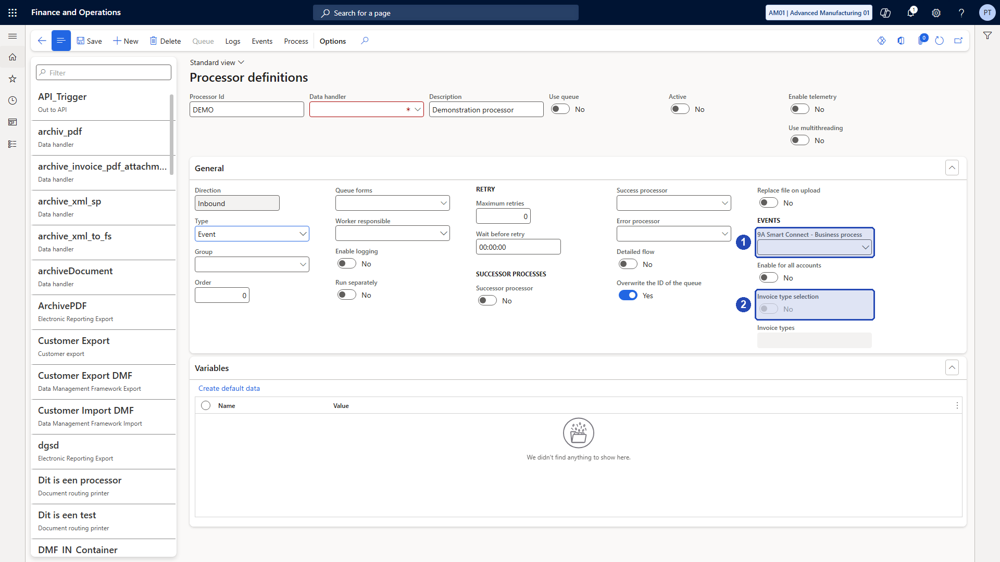
- Choose the Business process (e.g. Sales invoice create)
- Turn on Invoice type selection to filter which invoice types trigger the event
Successor processors — the revealed fields
With Enable successor processor on (Parameters) and Is successor processor = Yes, the Successor processes group exposes: Success processor Id, Error processor Id, Detailed successor flow and Overwrite Id of queue. A success/error target must itself be marked Is successor processor and cannot be the processor itself (validated on save). Full mechanics: Process chaining.
Multithreading — the revealed fields
With Enable processor multithreading on (Parameters) and Use multithreading = Yes, a Multithreading group appears:
| Field | Controls |
|---|---|
| Worker max threads | Maximum number of parallel worker threads the dispatcher may start. |
| Worker retry max | Maximum retries per work item before it is marked Failed. |
| Worker retry wait time | Delay before a failed work item is retried. |
| Worker recover timeout time | How long an item may stay In processing before it is treated as stale and recovered. |
Full mechanics — dispatcher, work items, pessimistic claim: Multithreading & work dispatch.
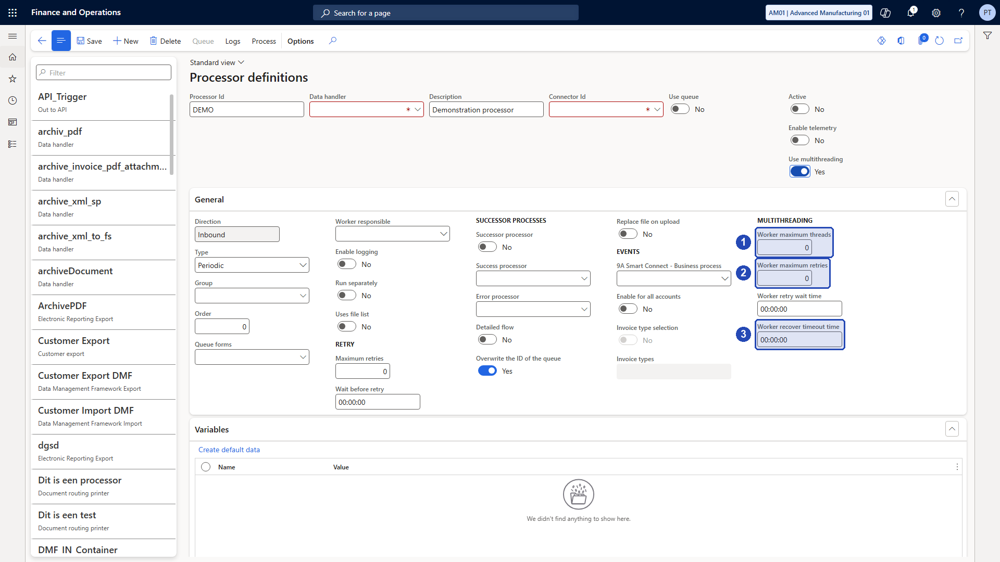
- Worker maximum threads — how many run in parallel
- Worker maximum retries — attempts per work item
- Worker recover timeout — when a stalled item is reclaimed (retry wait sits between)
Processor sub-grids & buttons
| Element | Where | Purpose |
|---|---|---|
| Variables grid | Variables tab | Handler/connector settings you must supply (e.g. Directory, Definition group). Rebuilt when the handler or connector changes; a Reload button regenerates it. |
| Events button | Action pane | The document events subscribed to this processor. Shown for Event processors. |
| Invoice types picker | Events group | Which invoice types trigger the event. Enabled for Event + Sales invoice create + Invoice type selection. |
| Queue button | Action pane | The queue records for this processor. Enabled when Use queue is on. |
| Queue forms | General tab | The F&O forms/tables allowed to enqueue to this processor. |
| Log button | Action pane | The execution log/history for this processor. |
| Header / API body tab | Detail tabs | A free-text template — Header appears for DMF-no-header inbound handlers; API body for outbound API handlers. |
The Events group here only declares the business process. For the full picture — every out-of-the-box trigger, the difference between All accounts and the Business process config table, and how invoice-type filtering works — see Events & triggers — when a document fires.
Events & triggers — when a document fires, and to which processor
An Event processor (Type = Event) never polls. It is fired synchronously, inside the same transaction, right after a standard D365 posting completes. Two things decide whether anything happens: which standard action ran (the trigger) and which processors are mapped to that action for the document's customer or vendor (the routing).
Out-of-the-box triggers
Each trigger is a thin extension on a standard posting class or table. After the standard code runs (next …), it builds a NANBusinessProcessEventCreateContract for the posted journal record and calls NANBusinessProcessEventCreateService::execute(), which resolves the matching processors and creates one event per processor. These are the business processes delivered in the box (the NANBusinessProcess enum is extensible, so partners can add their own):
| Business process (enum) | Fires after… | Hook (extension → method) | Source journal |
|---|---|---|---|
| Sales order confirmation | |||
SalesOrderConfirm |
Posting a sales order confirmation | SalesConfirmJournalPost.postJournalPost() |
CustConfirmJour |
| Packing slip | |||
PackingSlipCreate |
Posting a packing slip | SalesPackingSlipJournalPost.postJournalPost() |
CustPackingSlipJour |
| Sales invoice | |||
SalesInvoiceCreate |
Posting a sales invoice / credit note (proforma skipped) | SalesInvoiceJournalPost.postJournalPost() |
CustInvoiceJour |
| Free-text invoice | |||
SalesInvoiceCreate |
Posting a free-text invoice (proforma skipped) | CustPostInvoice.postCustInvoice() |
CustInvoiceJour |
| Project invoice | |||
SalesInvoiceCreate |
Posting a project invoice (proforma skipped) | ProjInvoiceJournalPost.endPost() |
ProjInvoiceJour |
| Purchase order confirmation | |||
PurchOrderConfirm |
Posting a purchase order confirmation | PurchConfirmationJournalPost.postJournalPost() |
VendPurchOrderJour |
| Peppol response (MLR) | |||
BusinessDocumentApplicationResponse |
An inbound Peppol application response is written and carries a processing code | BusinessDocumentApplicationResponse.insert() / update() |
CustInvoiceJour (sales) or VendInvoiceJour (purchase) |
The two confirmation triggers also flip the extension flags on the order: after a sales confirmation, NANSalesTable.Exported = Yes and ReExportOnConfirm = No; after a purchase confirmation the same is set on NANPurchTable. That is what the Exported / Re-export on confirm fields on the order's Integration tab reflect.
Manual (re)trigger — the “9A Smart Connect” button
Every posted-document journal form also gets a 9A Smart Connect action-pane button (menu item NANBusinessProcessEventCreateController) that runs the same service against the selected record. Use it to (re)push a document through Smart Connect without re-posting it — e.g. after fixing a partner's routing, or when an export failed. The button is added to CustInvoiceJournal, CustPackingSlipJournal, CustConfirmJournal, VendPurchOrderJournal and ProjInvoiceJournal.
Routing — “All accounts” vs. the Business process config table
Once a trigger fires, the service asks NANBusinessProcessConfig::getCustVendBusinessProcessQuery() for every processor that serves this business process for this document's account. There are two independent ways a processor gets selected:
| Mechanism | Where you set it | Fires for… | Best for |
|---|---|---|---|
| All accounts | |||
NANProcessorTable.IsAllAccounts = Yes |
The All accounts toggle in the processor's Events group (defaults to Yes on a new processor) | Every customer/vendor — no per-account setup needed | “Always export every sales invoice through this one processor.” |
| Business process config | |||
NANBusinessProcessConfig |
The Business process config setup form, or the 9A Smart Connect button on a Customer / Vendor (pre-filtered to that account) | Only the accounts / groups you list: a row is RelType (Cust, Vend, CustGroup or VendGroup) + RelationNum (the account or group) → ProcessorId | “This partner (or customer group) needs a different processor / format.” |
The resolver builds a union of three branches, all filtered by the business process: (1) processors with All accounts = Yes, (2) processors linked to a config row for the exact account, and (3) processors linked to a config row for the customer/vendor group. A single posting can therefore fire several processors at once. If you want a specific partner handled by a dedicated processor, either turn its All accounts off and add a config row, or leave a general all-accounts processor running alongside the account-specific one.
Invoice-type filtering (Sales invoice create only)
The Invoice type selection toggle and its Invoice types picker (NANProcessorInvoiceTypeTable) only matter for the SalesInvoiceCreate business process; the other triggers ignore them.
| Invoice type selection | What fires |
|---|---|
| No (default) | Every posted sales invoice / credit note that has a SalesId (backward-compatible behaviour). Free-text and project invoices do not fire in this mode (they have no SalesId). |
| Yes | Only the invoice types ticked in the picker: Sales invoice / credit note, Free-text invoice / credit note, Project invoice / credit note. This is the only way free-text and project invoices trigger an event. |
What happens when it fires
For each matched processor the service calls NANProcessorEventTable::createEvent(), writing one event row (source table + record + document Id, Status = Waiting). From there the document follows the normal path: if the processor uses a queue it is enqueued and run by the retry engine / batch; an event with Skip queue execution (or no queue) runs the handler and connector immediately. See Queue reference and Core concepts.
flowchart TB
POST["Standard D365 posting completes · invoice / packing slip / confirmation / Peppol response"]
HOOK["NAN extension runs after 'next' · NANBusinessProcessEventCreateService.execute()"]
RESOLVE{"getCustVendBusinessProcessQuery · business process + account"}
ALL["Processors · All accounts = Yes"]
ACC["Config row · account (Cust / Vend)"]
GRP["Config row · group (CustGroup / VendGroup)"]
FILTER{"SalesInvoiceCreate? apply invoice-type filter"}
EV["createEvent → NANProcessorEventTable · one per matched processor"]
Q[("Queue message")]
RUN["Data handler + connector run · direct or via queue / batch"]
POST --> HOOK --> RESOLVE
RESOLVE --> ALL
RESOLVE --> ACC
RESOLVE --> GRP
ALL --> FILTER
ACC --> FILTER
GRP --> FILTER
FILTER --> EV --> Q --> RUN
Queue — complete field reference
The Queue holds every message a processor enqueues. It is where retries, manual reprocessing and manual file uploads happen. This section covers every field, the status values, the form actions, and the linked tables.
Queue fields
| Field | Table field | Meaning |
|---|---|---|
| Message Queue Id | QueueId |
Unique GUID of the message (auto-generated). Primary key. |
| Processor Id | ProcessId |
The processor that owns the message. |
| Status | Status |
Processing state — Pending, Processed, Error or Cancelled (see below). |
| Direction | ProcessDirection |
Inbound (into F&O) or Outbound (out of F&O). |
| Processed | ProcessDT |
Timestamp the message reached Processed. |
| Payload | Payload |
The message content (the file/data being processed). |
| File name / File type | Filename / FileType |
Original filename and extension of the source document. |
| Id | Id |
The business record identifier (e.g. SalesId, invoice number). |
| Retry count | RetryCount |
Number of retry attempts so far. Incremented on each Error. |
| Retry date/time | RetryDateTime |
Earliest time the message may be retried (now + Wait before retry). |
| Process run Id | ProcessRunId |
Id of the current run — stops a run picking up its own retries. |
| Execution Id / Entity | ExecutionId / Entity |
Links to the DMF execution and entity for DMF-based processing. |
| Image / Image file name | Image / ImageFileName |
An attached document (Base64) and its filename. |
| Process step | ProcessStep |
Step indicator for multi-step processing. |
| Processor worker status | ProcessorWorkerStatus |
Multithreading worker state — None, Queued, Retry waiting or Failed. Shown only when multithreading is enabled. |
Queue status values
Pending — enqueued, ready to process Processed — completed successfully Error — failed, eligible for retry Cancelled — excluded by the user
Queue form actions
| Button | What it does | Available when |
|---|---|---|
| Process message | Manually (re)process the selected message(s). | Status is not Processed/Cancelled and no worker is busy on it. |
| Cancel message | Set the message to Cancelled so it is skipped. | Status is not Processed/Cancelled and no worker is busy. |
| Upload | Manually upload a file, creating a new Pending inbound queue record. | Manually upload files is on and the processor is Inbound. |
| Upload secondary | Attach a secondary payload (e.g. a PDF beside an XML) to an existing record. | Manually upload files is on, the connector supports it, and Inbound. |
The Upload buttons only appear after you switch on Manually upload files in Parameters. Uploading creates a queue record with Status = Pending, the file as the Payload and the filename set; the retry engine then picks it up like any other message — so a failed import can be retried without re-uploading.
Linked queue tables
| Table | Holds |
|---|---|
| Queue response log | |
NANQueueResponseLogTable |
Responses received for a message — Direct (synchronous) or Deferred (asynchronous), with a result of Processed / Error / Warning and the response content. |
| Queue payload | |
NANQueuePayloadTable |
A secondary/alternate payload (binary) attached to a message — filename, file type and content. |
| Queue forms | |
NANQueueFormTable |
Maps a processor to the F&O forms where its queue can be accessed/enqueued (per-form Enabled flag). |
Global parameters — complete reference
The Parameters form holds one record per company and controls module-wide behaviour. Several parameters act as master switches that reveal fields on the processor and queue forms — those links are called out below.
General tab
| Parameter | Table field | What it controls |
|---|---|---|
| Use keyvault | UseKeyvault |
Store connector secrets as Azure Key Vault references instead of in the database. Mutually exclusive with Encrypt credentials. Switches every secret field to a Key Vault lookup. |
| Encrypt credentials | EncryptCredentials |
Encrypt connector secrets at rest with the environment key. Mutually exclusive with Use keyvault. |
| Override event deletion | OverrideDeleteEvent |
Allow processed events to be deleted even when linked to a queue record (e.g. during testing). |
| Full global error | GlobalErrorStack |
Show the full stack trace on errors instead of just the message. |
| Manually upload files | ManualUpload |
reveals fields Enables the Upload / Upload secondary buttons on the queue form for inbound processors. |
| Enable filename based selection | SearchOnFilenameBasedQuery |
changes behaviour Filter inbound files by filename/extension pattern before fetching; also maintains the hidden processor-variable exclusion list. |
| Enable successor processor | EnableSuccessorProcessor |
reveals fields Master switch for process chaining — reveals the Successor processes group on processors. |
| Enable processor multithreading | EnableProcessorMultithreading |
reveals fields Master switch for parallel processing — reveals Use multithreading and its worker settings, and the queue worker-status column. |
| Disable filename cleaning | DisableFilenameCleaning |
changes behaviour Keep illegal filename characters instead of replacing them with underscores. Can be overridden per FTP/SFTP connector. |
E-invoice tab
| Parameter | Table field | What it controls |
|---|---|---|
| Disable E-Invoice warnings | DisableEInvoiceWarnings |
Suppress validation warnings during e-invoice processing (Peppol, MySupply, …). |
| Search function | RegistrationNumSearch |
How vendors/customers are matched on inbound e-invoices — by VAT number, by registration number, or both. |
Four parameters change what you see elsewhere: Manually upload files (queue Upload buttons), Enable successor processor (successor fields), Enable processor multithreading (multithreading fields) and Use keyvault (Key Vault lookups on connectors). If a documented field is "missing", check these first.
Sub-tables & supporting data
The smaller tables that hang off connectors and processors. Most are edited through grids on the connector/processor forms rather than standalone menu items.
Processor variables & exclusions
| Table / field | Purpose |
|---|---|
Processor variables NANProcessorVariableTable |
Key/value settings the handler and connector require. Variable name and Connector to are read-only (defined by the interface); you fill in Value. Inactive variables are hidden by filename-based selection. |
Exclude variables NANProcessorExcludeVariableTable |
Per-connector list of variables that should not be exposed to users; drives the Inactive flag on processor variables. |
Events, invoice types & business process
| Table / field | Purpose |
|---|---|
Processor events NANProcessorEventTable |
One row per document event (Insert/Update/Delete) captured for a processor: source table + record, Status (Waiting/Sent/Error), retry count and message. Linked to a queue message. |
Invoice types NANProcessorInvoiceTypeTable |
Which invoice types trigger the processor: Sales invoice/credit note, Free text invoice/credit note, Project invoice/credit note. |
Business process config NANBusinessProcessConfig |
Maps a processor to a customer/vendor account or account group, so different partners can use different processes. |
Attributes, placeholders & groups
| Table / field | Purpose |
|---|---|
Attributes NANAttributeTable |
Generic name/value metadata for a connector and (optionally) a processor. Lookups fall back from the specific processor to a connector-wide default. |
Placeholder NANPlaceholderTable + lines NANPlaceholderLine |
Reusable regex patterns that extract values from an inbound payload into queue fields (each line = a regex → a target field). |
Process group NANProcessGroupTable |
Named group of processors scheduled together (referenced by Group on the processor). |
Processor log
Every run writes to NANProcessorLogTable: the processor, log level (Info/Error), the message, the source table+record, the queue message Id, the DMF execution Id, the handler class and the filename/reference. It is the primary audit trail and the backing data for the Logs inquiry.
Solution & module map
Smart Connect is delivered as a core model plus focused add-on models. Every object uses the NAN prefix (the legacy internal name of the framework was Input Output Framework V2).
| Model | Role | Highlights |
|---|---|---|
| InputOutputFrameworkV2 | ||
core |
The universal connector / processor / handler / queue engine. | All base classes, tables, forms, security, enums. |
| InputOutputFrameworkV2 DMS | Inbound document capture & management. | ExArte Raptor, UBL, Tungsten, MySupply handlers. |
| InputOutputFrameworkV2 EB | Electronic banking & payments. | Cobase connector, ISO 20022 PAIN/CAMT. |
| InputOutputFrameworkV2 PIW | Purchase invoice workflow. | Peppol e-invoice, Readsoft, UBL parsing, vendor sync. |
| Pyladesinputoutputframework | ||
legacy |
Earlier file-centric I/O framework. | Folder import/export; prefix PYLIO. |
flowchart TB
CORE["Core · InputOutputFrameworkV2 · Connector / Processor / Handler / Queue"]
DMS["DMS · Document capture"]
EB["EB · Electronic banking"]
PIW["PIW · Purchase invoice workflow"]
DMS --> CORE
EB --> CORE
PIW --> CORE
Component architecture
Internally the framework is layered. A trigger enters through the orchestrator, which schedules a processor; the processor drives a handler and a connector; the queue and logging provide reliability and observability.
flowchart TB
subgraph TR["Triggers"]
A1["Run processors"]
A2["Table event"]
A3["ER / Print destination"]
end
subgraph ENG["Engine"]
O["NANOrchestratorV2"]
WD["NANProcessorWorkDispatcher"]
P["NANProcessor (In / Out)"]
end
subgraph SHAPE["Data shaping"]
H["NANHandler (In / Out)"]
end
subgraph TRANS["Transport"]
C["NANConnecter (13 types)"]
end
subgraph REL["Reliability & audit"]
Q[("NANQueueTable")]
L[("NANProcessorLogTable")]
T[("Telemetry / App Insights")]
end
A1 --> O
A2 --> O
A3 --> O
O --> WD --> P
O --> P
P --> H --> C
P --> Q
P --> L
P --> T
Class architecture
Connector hierarchy
All connectors extend the base NANConnecter. Each concrete connector is decorated with [NANConnecterAttribute(NANConnecterType::X)]; the base uses SysExtensionAppClassFactory::getClassFromSysAttribute() to instantiate the correct subclass from configuration — no switch statements.
flowchart TB
B["NANConnecter (base)"]
B --> API["NANConnecterAPI"]
B --> BLOB["NANConnecterBlob"]
B --> FS["NANConnecterFileShare"]
B --> CON["NANConnecterContainer"]
B --> FTP["NANConnecterFTP"]
B --> SFTP["NANConnecterSFTP"]
B --> SP["NANConnecterSharePoint"]
B --> URL["NANConnecterUrl"]
B --> KOF["NANConnecterKofax"]
B --> BAB["NANConnecterBabelwaySoap"]
B --> ATT["NANConnecterAttachment"]
B --> UI["NANConnecterUI"]
API --> AS2["NANConnecterAS2"]
Key methods on the base class:
| Method | Responsibility |
|---|---|
construct() / constructInitAndPrimeForProcess() |
Factory that resolves, initialises and primes the right connector for a process. |
initialize() |
Set up telemetry and assign configuration values. |
prime() |
Connector-specific setup — login, token acquisition, client construction. |
execute(action, reference) |
Dispatch: routes a Get to get() and a Post to set(). |
get() / set() |
Download from / upload to the external source. |
getFileNames() |
List available files (file-capable connectors only). |
moveDelete() |
Move or delete a file after processing (success / failure folders). |
Processor hierarchy
NANProcessor extends SysOperationServiceBase, so processors run in the standard batch/SysOperation framework.
flowchart TB
NP["NANProcessor (base)"]
NP --> IN["NANProcessorIn"]
NP --> OUT["NANProcessorOut"]
IN --> INP["NANProcessorInPeriodic"]
IN --> INE["NANProcessorInEvent"]
IN --> INER["NANProcessorInER"]
IN --> INPM["NANProcessorInPeriodicMulti"]
IN --> INT["NANProcessorInTransfer"]
OUT --> OD["NANProcessorOutDirect"]
OUT --> OE["NANProcessorOutEvent"]
OUT --> OP["NANProcessorOutPeriodic"]
Handler hierarchy
Handlers shape the payload. The base is NANHandler, split into NANHandlerIn and NANHandlerOut. The naming convention encodes direction and purpose — e.g. NANHandlerOutDmf, NANHandlerOutER, NANHandlerInDmf, NANHandlerOutEdiKrone.
Representative outbound handlers
NANHandlerOutDmf NANHandlerOutER NANHandlerOutEdi NANHandlerOutSalesInvoice NANHandlerOutAPI NANHandlerOutDR NANHandlerOutPaymentFile
Representative inbound handlers
NANHandlerInDmf NANHandlerInDmfJsonToXml NANHandlerInER NANHandlerInSalesXmlJson NANHandlerInTungstan
Orchestrator
Two orchestrators exist. NANOrchestratorV2 is the current implementation and adds multithreading and queue-driven work dispatch; NANOrchestrator is retained for backward compatibility. The controller NANOrchestratorController is the Run processors menu action.
Outbound pipeline
The outbound (export) flow moves data from D365 F&O to an external system. The processor's push() loop is the heart of it.
sequenceDiagram
autonumber
participant T as Trigger
participant O as NANOrchestratorV2
participant P as NANProcessorOut
participant H as NANHandlerOut
participant Q as NANQueueTable
participant C as NANConnecter
participant X as External system
T->>O: process(NANContract)
O->>P: schedule + process()
P->>H: sendInitData() then processPre()
P->>H: sendGetData() then data.process()
H-->>P: goNoGo + payload
alt goNoGo = true
P->>Q: enqueue() (if Use queue)
P->>C: sendSetData() setPayload()
P->>C: sendExecute() execute(action, reference)
C->>X: POST / PUT / upload
X-->>C: response
C-->>P: success
P->>Q: processQueueProcessed -> Processed
else goNoGo = false
P->>Q: processQueueFailed -> Error
end
The go / no-go pattern
Inside data.process() the handler sets goNoGo = true only when there is genuinely data to export. If false, the connector is not called, avoiding empty sends. The term originates from aerospace “go / no-go” decisions.
Filenames & folders
NANHandlerOut.generateFileName() derives the file name from the handler's reference plus a file extension; if Unique filename is enabled, NANFunctions::getUniqueFilename() appends a unique suffix to avoid collisions. Success/failure sub-folders are handled by the connector's moveDelete().
Inbound pipeline
The inbound (import) flow retrieves data from an external source and processes it into D365 F&O. For file-based connectors it can first list files and then process each one individually for per-file error handling.
sequenceDiagram
autonumber
participant S as Scheduler / Event
participant O as NANOrchestratorV2
participant P as NANProcessorIn
participant C as NANConnecter
participant X as External source
participant H as NANHandlerIn
participant D as D365 (DMF / tables)
S->>O: process(NANContract)
O->>P: process() then processIn()
P->>C: getFileNames() (if file list)
C->>X: list files
X-->>C: file names
loop each file
P->>C: execute(Get, reference)
C->>X: download
X-->>C: payload
C-->>P: payload
P->>H: processPayload() then data.process()
H->>D: import (DMF / custom)
alt success
P->>C: moveDelete -> success folder
else failure
P->>C: moveDelete -> failure folder
end
end
With Use file list, the framework first obtains the list of files, then processes each file name separately. One bad file no longer blocks the rest of the batch.
Custom services
Smart Connect ships one custom web service that lets an external system talk to the framework directly over D365's standard OData/JSON service endpoints — without a scheduled connector poll. It is the counterpart to the outbound connectors: where connectors reach out, this service lets the outside world push in and report back.
| Object | Type | Purpose |
|---|---|---|
NANProcessServiceGroup |
Service group (AutoDeploy = Yes) |
Publishes the service so it is reachable at /api/services/…. |
NANProcessInService |
Service (ExternalName = NANProcessInService) |
Inbound process service exposing two operations. |
Because the group auto-deploys, both operations are callable as POST requests:
POST /api/services/NANProcessServiceGroup/NANProcessInService/setQueuePOST /api/services/NANProcessServiceGroup/NANProcessInService/setQueueResponse
The endpoints use standard D365 F&O service authentication (Azure AD OAuth bearer token for the calling app registration). No Smart Connect-specific credential is involved on the inbound side.
setQueue — push a message into the queue
An external middleware calls setQueue to drop a payload straight onto the Smart Connect queue, exactly as an inbound connector would. Internally it runs NANQueueTable::enqueue(...) inside the requested company. This is the endpoint the Peppol middleware uses (see E-invoicing — Belgium).
Contract: NANProcessInContract ([DataContract('ProcessRequest')])
| Data member | Type | Purpose |
|---|---|---|
ProcessId |
NANProcessorId | Target processor that will handle the message. |
Direction |
NANProcessDirection | Inbound / Outbound. |
Company / DataAreaId |
SelectableDataArea | Legal entity to enqueue in; defaults to the calling context company. |
Payload |
String | The message body (UTF-8). |
Filename / FileType |
Filename / FilenameType | Filename and extension recorded on the queue message. |
ProcessRunId / Id |
Guid | Correlation identifiers for the run and the individual message. |
RefId |
String | Optional external reference stored on the queue record. |
Image / ImageFileName |
String / Filename | Optional embedded image (e.g. a rendered document) and its filename. |
Flow: External system → POST …/setQueue → NANQueueTable::enqueue() → Queue → processor
setQueueResponse — the deferred response
This is the deferred (asynchronous) response operation. When a message is sent outbound and the receiving party only confirms the result later, that party (or the middleware) calls setQueueResponse with the original QueueId and the outcome. Smart Connect validates the queue still exists and the result type is known, then writes a deferred response onto NANQueueResponseLogTable.
Contract: NANQueueResponseLogContract ([DataContract])
| Data member | Type | Purpose |
|---|---|---|
QueueId |
Guid | The queue message the response belongs to (must exist). |
Company |
SelectableDataArea | Legal entity of the original message; defaults to the calling context company. |
Payload |
String | The raw response content to log. |
ResponseResult |
NANResponseResult (string) | Result of processing; parsed to NANResponseResultType — Processed, Error or Warning. An unknown value is rejected (validate()). |
The result is stored via NANQueueResponseLogTable::createLog(NANResponseType::Deferred, …), which is what distinguishes it from a direct response captured synchronously when a connector's Enable response log is on (see Queue and retry mechanics).
Flow: Receiving party → POST …/setQueueResponse → validate QueueId + result type → NANQueueResponseLogTable (Deferred)
Direct vs deferred responses
| Direct | Deferred | |
|---|---|---|
| Captured when | The connector call returns (synchronous), if Enable response log is set | Later, when the counterparty calls setQueueResponse |
| Written by | The outbound pipeline | NANProcessInService.setQueueResponse |
| Response type | NANResponseType::Direct |
NANResponseType::Deferred |
| Result values | — | NANResponseResultType: Processed / Error / Warning |
Both are stored on NANQueueResponseLogTable and reviewable per message from the queue's Direct/deferred responses form; the queue row also exposes a Deferred response button once a deferred entry exists. See Queue fields and Queue events and logs.
NANResponseType and NANResponseResultType are both extensible enums — a customisation can add further response kinds or result types without changing the service contract.
Queue & retry mechanics
When Use queue is enabled the processor runs in two passes: pass 1 collects and enqueues messages (NANQueueTable::enqueue()); pass 2 consumes the queue and performs the actual send/import, so failures can be retried without regenerating the payload.
stateDiagram-v2
[*] --> Pending: enqueue()
Pending --> Processed: success
Pending --> Error: failure
Error --> Processed: retry succeeds
Error --> Error: retry (RetryCount < Max)
Error --> Cancelled: user cancels
Pending --> Cancelled: user cancels
Processed --> [*]: cleanup job
Cancelled --> [*]: cleanup job
Retry eligibility
A queued message is retried while RetryCount < RetryMax and its RetryDateTime has passed. When the maximum is reached the message stays in Error for inspection. Manual retries (from the Queue form) bypass the maximum.
Response logging & successors
If the connector has Enable response log, the raw response is stored in NANQueueResponseLogTable (direct and deferred). A processor can also define success/error successor processors that automatically run when a message is processed or fails.
| Table | Holds |
|---|---|
NANQueueTable |
The message: payload, filename, status, retry count/time, references. |
NANQueuePayloadTable |
Secondary payload (e.g. an image alongside an XML). |
NANQueueResponseLogTable |
Direct/deferred responses for auditing and deferred processing. |
Multithreading & work dispatch
For event- and queue-driven processors, NANOrchestratorV2 can process work in parallel using a work-dispatch subsystem. Items are collected from events and the queue into NANProcessorWorkTable, then claimed by worker threads.
| Class | Role |
|---|---|
NANProcessorWorkDispatcher |
Recovers stale items, collects new work, and spawns worker threads (capped at the item count). |
NANProcessorWorkItemCollector |
Creates work items from waiting events and pending queue records. |
NANProcessorWorkItemClaim |
Atomically claims the next item using a pessimistic lock with READPAST. |
NANProcessorWorkItemRecover |
Resets items stuck InProcessing beyond a timeout, and reassigns orphaned items. |
NANProcessorWorkExecutionService |
The worker loop that executes the processor for each claimed item. |
stateDiagram-v2
[*] --> ToBeProcessed: collector creates item
ToBeProcessed --> InProcessing: claimWorkItem() (lock)
InProcessing --> [*]: success (delete)
InProcessing --> RetryWaiting: failure & RetryCount < Max
RetryWaiting --> InProcessing: claim after NextRetryDateTime
InProcessing --> RetryWaiting: recover stale (timeout)
InProcessing --> Failed: retries exhausted
Failed --> [*]: audit / manual
Process chaining (successors)
A processor can automatically trigger another processor when it succeeds or fails — turning individual processes into an end-to-end workflow (for example: import → on success post to ERP → on failure notify).
Configuration fields
| Field / parameter | Purpose |
|---|---|
| Enable successor processor | |
NANParameterTable.EnableSuccessorProcessor |
Global master switch for successor logic. |
| Success processor Id | |
NANProcessorTable.SuccessProcessorId |
The processor to run after successful completion. |
| Error processor Id | |
NANProcessorTable.ErrorProcessorId |
The processor to run after a failure. |
| Is successor processor | |
NANProcessorTable.IsSuccessorProcessor |
Marks a processor as eligible to be called as a successor (a validation guard). |
| Detailed successor flow | |
NANProcessorTable.DetailedSuccessorProcessorFlow |
When Yes, a new queue record is created for the successor; when No, the same queue/payload is passed through. |
| Business process = Parent processor | For event-based parent/child hierarchies, the parent copies its event context to the child. |
How it runs
On completion, NANProcessor.processQueueProcessed() calls processSuccessorProcessor(SuccessProcessorId); on failure, processQueueFailed() calls it with the ErrorProcessorId. Depending on Detailed successor flow, the successor either reuses the original queue RecId or receives a fresh queue record created by createQueueForDetailedSuccessorProcessorFlow(). Execution is synchronous via NANOrchestratorController.
flowchart TB
P["Primary processor"]
OK{"Result?"}
S["Success processor (SuccessProcessorId)"]
E["Error processor (ErrorProcessorId)"]
P --> OK
OK -- processed --> S
OK -- error --> E
S -. new or same queue .-> Q1[("Queue")]
E -. new or same queue .-> Q1
How to configure
- Enable Enable successor processor in Parameters.
- On the primary processor, set Success processor Id and/or Error processor Id.
- On each successor processor, set Is successor processor = Yes.
- Choose the flow: leave Detailed successor flow = No to pass the same payload through, or set Yes to create an independent queue record (enables parallelism).
- For parent/child events, set the parent's Business process = Parent processor.
Filename handling
Two related capabilities give you control over which inbound files are picked up, and how file names are sanitised and made unique.
Filename-based selection
When NANParameterTable.SearchOnFilenameBasedQuery is enabled, inbound processing filters the file list before fetching. NANProcessorIn.allowFetchFilename() checks each candidate against the connector's search pattern (searchFilenameStringInDirectory()) and extension filter (searchFileExtentionInDirectory()).
| Pattern | Matches |
|---|---|
*invoice* |
files that contain “invoice” anywhere in the name. |
PO_* |
files whose name starts with “PO_”. |
*.xml / *_out |
files whose name ends with the given text. |
* |
all files (no filtering). |
An extension filter (e.g. .xml, .csv) is compared case-insensitively. A file must satisfy both the pattern and the extension (when both are set) to be processed; others are skipped silently.
Filename cleaning
NANFunctions::cleanFilename() replaces characters that are illegal in file systems — \ / : * ? " < > | — with an underscore. It is controlled by NANParameterTable.DisableFilenameCleaning and can be overridden per connector via NANConnecterTable.DisableFilenameCleaning (a three-state NANDefaultNoYes: Default inherits the global, Yes forces off, No forces on).
Flow: Invoice:2024<Draft>.xml → cleanFilename() → Invoice_2024_Draft_.xml
Unique file names
When a processor's Unique filename option is on, NANFunctions::getUniqueFilename() appends a UTC timestamp to the base name (keeping the extension), so an existing file can be replaced without a duplicate-name collision.
Flow: Report.xml → getUniqueFilename() → Report_01-15-2024 023045.1234 PM.xml
Use filename-based selection to share one inbound folder across several processes (each picking up only its own files). Use unique filename for outbound Azure storage to avoid duplicate-file errors.
Authentication & secrets
OAuth token acquisition & caching
NANOAuthToken acquires tokens according to the connector's authentication type (Azure, OAuth, Audience). When Use token cache is on, tokens are cached globally (via NANOAuthTokenCache) until shortly before expiry (a five-second safety buffer), avoiding a token request on every call.
Three ways to store secrets
Plain text
Default. Acceptable only for non-production / early project setup.
Field encryption
When Encrypt credentials is on, NANConnecterEncryptCredentials encrypts connection strings, secrets and passwords at rest.
Azure Key Vault
When Use Key Vault is on, fields reference secrets fetched from Key Vault at runtime. Recommended for production.
Credential encryption
When NANParameterTable.EncryptCredentials is switched on, the three sensitive fields on every connector — ConnectionString, ClientSecret and Password — are encrypted at rest using the platform's Global::editEncryptedStringField(). The class NANConnecterEncryptCredentials performs the work:
| Method | Action |
|---|---|
encryptAllCredentials() / decryptAllCredentials() |
Batch-encrypt or decrypt every connector (with a confirmation prompt). |
encryptRecord() / decryptRecord() |
Encrypt/decrypt a single connector's three secret fields. |
Toggling the parameter automatically encrypts (No → Yes) or decrypts (Yes → No) all existing connectors, so you can import connectors in plain text and encrypt them in one action once configured.
Azure Key Vault
When NANParameterTable.UseKeyvault is on, the connector's credential fields no longer hold the secret value — they hold the name of a Key Vault secret. At runtime getConnectionString(), getClientSecret() and getPassword() resolve the real value through KeyVaultCertificateHelper::getManualSecretValue() against the standard KeyVaultCertificateTable. The form lookups lookupKeyvaultSecret() and lookupKeyvaultCertificate() let you pick a secret or certificate from the vault.
Use either field encryption or Key Vault — not both. Key Vault is the recommended production approach; enable it as soon as the vault is available and move the secret names onto the connectors.
Certificates
Certificates are stored in NANConnecterCertificateTable with a purpose of Signing, Encryption (AS2) or Authentication (SFTP). The SFTP connector re-reads the certificate stream before each operation because the stream is consumed during I/O.
Data model
The core tables revolve around the connector and the processor. A connector is used by many processors; a processor owns its variables, events, queue messages and logs.
erDiagram
NANConnecterTable ||--o{ NANProcessorTable : "used by"
NANConnecterTable ||--o{ NANConnecterCertificateTable : certificates
NANConnecterTable ||--o{ NANConnecterCustomAPIHeaderTable : headers
NANProcessGroupTable ||--o{ NANProcessorTable : groups
NANProcessorTable ||--o{ NANProcessorVariableTable : variables
NANProcessorTable ||--o{ NANQueueTable : messages
NANProcessorTable ||--o{ NANProcessorLogTable : logs
NANProcessorTable ||--o{ NANProcessorEventTable : events
NANProcessorTable ||--o{ NANProcessorInvoiceTypeTable : "invoice types"
NANProcessorTable ||--o{ NANBusinessProcessConfig : "cust/vend routing"
NANQueueTable ||--o| NANQueuePayloadTable : "secondary payload"
NANQueueTable ||--o{ NANQueueResponseLogTable : responses
NANProcessorEventTable ||--o| NANProcessorWorkTable : "work item"
| Table | Purpose & key fields |
|---|---|
NANParameterTable |
Global settings: EnableLogging, MaxRetries, EncryptCredentials, UseKeyvault, LogConnector. |
NANConnecterTable |
Connector config: ConnecterId, ConnecterType, AuthType, ResourceUrl, credentials. |
NANProcessorTable |
Process definition: ProcessId, HandlerId, ConnecterId, ProcessType, ProcessDirection, UseQueue, IsActive. |
NANProcessorVariableTable |
Handler variables: ProcessId, VarName, VarValue. |
NANQueueTable |
Message queue: QueueId, ProcessId, Status, Payload, RetryCount, RetryDateTime. |
NANProcessorLogTable |
Execution log: ProcessId, Reference, Payload, LogInfo, LogLevel. |
NANProcessorEventTable |
Events: ProcessId, RefTableId, RefRecId, EventType, Status. |
NANProcessorWorkTable |
Parallel work items: SourceType, SourceRecId, WorkStatus, RunId, RetryCount. |
NANBusinessProcessConfig |
Cust/vend → processor routing: RelType, RelationNum, ProcessorId. |
Enumerations reference
| Enum | Elements |
|---|---|
NANConnecterType |
Url, Api, Blob, FileShare, Container, FTP, SFTP, AS2, Kofax (Tungsten), BabelwaySoap, UI, SharePoint, Attachment |
NANAuthType |
Basic, Azure, OAuth, APIKey, Audience, BearerToken |
NANStorageAuthType |
SasCredential, ConnectionString, SharedKeyCredential |
NANContentType |
String, Stream, ByteArray, FormUrlEncoded, SysUrlEncoded, FormDataFileStream |
NANMediaType |
AppXml, AppJson, AppFormUrlEncoded |
NANCertificatePurpose |
Authentication, Signing, Encryption |
NANProcessType |
Event, Direct, Periodic, PeriodicMulti, PeriodicTransfer |
NANProcessDirection |
Inbound, Outbound |
NANBusinessProcess |
None, SalesOrderConfirm, PackingSlipCreate, SalesInvoiceCreate, PurchOrderConfirm, ParentProcessor, BusinessDocumentApplicationResponse |
NANInvoiceType |
SalesInvoice, SalesCreditNote, FreetextInvoice, FreeTextCreditNote, ProjectInvoice, ProjectCreditNote |
NANQueueStatus |
Pending, Processed, Error, Cancelled |
NANEventType |
None, Insert, Update, Delete |
NANEventStatus |
Waiting, Sent, Error |
NANProcessorWorkStatus |
ToBeProcessed, InProcessing, RetryWaiting, Failed |
NANProcessorWorkSourceType |
Event, Queue |
NANLogLevel |
Info, Error |
NANCustVendRelType |
Cust, CustGroup, Vend, VendGroup |
Security roles
Smart Connect ships two roles built from duties and privileges. Grant Maintain to functional administrators and View to users who only need to monitor.
| Role | Duty | Privileges | Access |
|---|---|---|---|
| 9A Smart Connect maintain | |||
NANRoleMaintain |
NANDutyMaintain |
NANPrivilegeMaintain, NANEntitiesMaintain |
Create, read, update, delete on all Smart Connect forms and data entities. |
| 9A Smart Connect view | |||
NANRoleView |
NANDutyView |
NANPrivilegeView, NANEntitiesView |
Read-only access to connectors, processors, queue, events and logs. |
Extensibility & custom code
When a standard data handler does not cover your scenario, write a custom one. Outbound handlers extend NANHandlerOut; inbound handlers extend NANHandlerIn.
Custom outbound handler
- Extend
NANHandlerOutand give the class a name for the setup lookup. - Declare variables as local
parmproperties; strip theparmprefix when reading their values (the setup shows them without the prefix). - Specify the integration type (Direct, Event or Periodic).
- Implement
process(): setgoNoGo = trueonly when there is data to export. - Provide the file name (and any sub-directory) through the appropriate methods.
Custom outbound handler (illustrative X++)X++
[NANHandlerAttribute]
public class MyHandlerOutCustomExport extends NANHandlerOut
{
// 1. Variables exposed to the processor setup (prefix 'parm')
private str parmDirectory;
// 2. Name shown in the Data handler lookup
public str className() { return "Custom export - my entity"; }
// 3. Trigger type & direction
public NANProcessType type() { return NANProcessType::Periodic; }
// 4. Assign variables (note: NO 'parm' prefix in the case label)
public void assignValue(str _name, str _value)
{
switch (_name)
{
case 'Directory': parmDirectory = _value; break;
}
}
// 5. Main method - set goNoGo only when there is data
public boolean process()
{
MyTable rec;
select firstOnly rec where rec.Exported == NoYes::No;
if (rec)
{
this.getPayload().setContent(this.buildXml(rec));
this.goNoGo = true; // there IS data -> proceed
}
return this.goNoGo;
}
}
Custom inbound handler
Inbound handlers follow the same pattern for variables, class name and type. Put the import logic in process(), verify that there is data to process, and set goNoGo = true on success so the framework completes all cascading steps.
Custom inbound handler (illustrative X++)X++
[NANHandlerAttribute]
public class MyHandlerInCustomImport extends NANHandlerIn
{
private str parmSuccessDir;
private str parmFailureDir;
public str className() { return "Custom import - my entity"; }
public NANProcessType type() { return NANProcessType::Periodic; }
public boolean process()
{
str content = this.getPayload().getContent();
if (content)
{
this.importFromXml(content); // your logic
this.goNoGo = true; // success -> move to success folder
}
return this.goNoGo;
}
}
For file-share imports, define two variables (success and failure directories). When goNoGo is true the file is moved to the success folder; otherwise to the failure folder.
The snippets show the framework's patterns (variable stripping, type(), className(), go/no-go). Confirm exact method signatures against the version of the framework in your environment before implementing.
DMS — Document capture
Model InputOutputFrameworkV2 DMS adds inbound document capture and management on top of the core, bridging D365 F&O to the 9A Raptor Document Warehouse (DWH).
It handles structured invoice / purchase-order import — UBL e-invoices, Tungsten and MySupply — and archives every document to Raptor so it stays traceable from both the Smart Connect queue and the Raptor All invoices record.
Raptor Document Warehouse — docs — docs.raptor.9altitudes.com/9a-document-management
Raptor's source is not part of this codebase — only its binaries ship with the DMS model (ExarteRaptorCore, ExarteRaptorDocumentManagement, ExarteRaptorInputManagement). For Raptor setup and concepts, use the Raptor Document Warehouse documentation. This manual covers only how Smart Connect integrates with it.
How Smart Connect integrates with Raptor
| Concern | Smart Connect object |
|---|---|
| Archive an XML / PDF / attachment to the DWH | NANExaUtils::uploadToDocWarehouse(Stream), EXADocuHelper |
| Create the imported purchase invoice | EXAPurchInvoiceImportedEntity (the All invoices record) |
| Link documents to the invoice with tags | EXADocuHelper::addTagsFromToDocuments() + processor template |
| Match a document to a purchase order | NANExaPurchRegexTable (regex PO transformation) |
| Connector / retrieval settings | NANExaConnectorRaptorTable, NANExaPurchFormatTable |
| Per-message state across steps | NANQueueHandlerInDMSUblTable |
The archive-first pattern (see E-invoicing — Belgium) links each archived document to the Smart Connect queue record by its unique id, and — after the invoice is created — tags them with the context of the Raptor All invoices record based on a template configured on the processor.
What it contributes
UBL import (V1 / V2 / RO)``Tungsten import``MySupply import``Raptor archiving``PO regex matching``UBL / project-invoice export
Raptor setup on the processor
When a processor uses a 9A Raptor DWH connector, the processor form gains a 9A Raptor DWH tab and a Raptor connector setup button (next to the Regex button used for PO recognition).
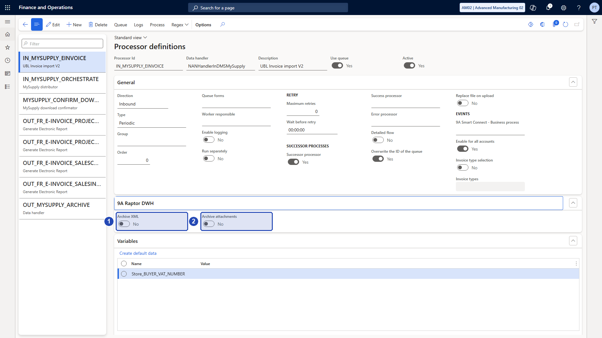
- Archive XML — archive the source UBL/XML document
- Archive attachments — archive the embedded PDF / attachments
The Raptor connector setup button opens a mapping form that tells Raptor which record to attach each document to and which template to tag it with — evaluated top-down by Sorting, first match wins:
| Column | Meaning |
|---|---|
| Sorting | Evaluation order of the rules. |
| Table name / Field name | The target D365 table and key field to match (e.g. custinvoicejour / InvoiceId). |
| Value | The value to match — usually a placeholder such as %InvoiceIdMYSUPPLY% that is expanded from the payload. |
| Document template | The Raptor document template used to tag/archive the document (e.g. Templates\R2B\SalesInvoice). |
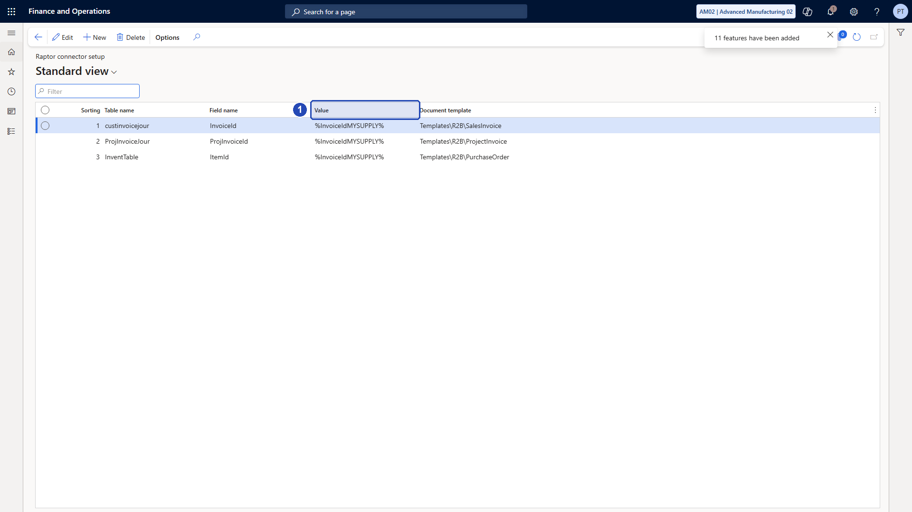
A global parameter Use Raptor template for attachments (on the Parameters form) extends the document template to attachments as well. The archive fields on the processor map to NANExaArchiveXml, NANExaArchivePdf and NANExaArchiveEmail; the mapping rows live in NANExaConnectorRaptorTable.
EB — Electronic banking
Model InputOutputFrameworkV2 EB adds banking and payment processing.
It integrates D365 cash management with ISO 20022 payment formats and bank reporting through the Cobase banking platform.
What it contributes
- Cobase connector (
NANEBConnecterCobase) — extends the API connector with X.509 certificate authentication (TLS 1.2). - Inbound statements (
NANEBHandlerInCobaseReportFiles) — processes ZIP-delivered bank statement XML (CAMT.053 / CAMT.052). - Outbound payments — ISO 20022 PAIN.001 payment initiation files, with an upload log tracking status, reference and file size.
Cobase``ISO 20022``PAIN.001``CAMT.053 / .052``X.509
PIW — Purchase invoice workflow
Model InputOutputFrameworkV2 PIW enhances purchase-to-pay with e-invoicing.
It integrates purchase invoice processing with international e-invoice standards — chiefly Peppol — and OCR capture, plus vendor master and bank synchronisation.
What it contributes
- Peppol handlers — inbound Peppol e-invoice with header and line parsing.
- Readsoft handler — OCR-based invoice capture.
- UBL parser classes (
NANWFUblParse*) — typed, hierarchical parsing of UBL invoice documents. - Vendor sync — outbound vendor and vendor-bank synchronisation handlers.
Peppol``Readsoft``UBL 2.x``Vendor sync
Pylades I/O (legacy)
Model Pyladesinputoutputframework is an earlier, file-centric I/O framework (prefix PYLIO).
It focuses on simpler folder-based import/export with file logging and basic transformation, later extended with Azure File share and Blob support. It has no queue, events or real-time connectors — Smart Connect core supersedes it for new work.
Release history
| Version | Change |
|---|---|
| 1.0.0.5 | Fixed Azure File share orchestrator batch hanging. |
| 1.0.0.4 | Added Azure File share and Blob storage. |
| 1.0.0.3 | Added cleanup jobs for logs and processed files. |
| 1.0.0.2 | Removed Public Sector dependency; duplicate-file handling; rename-on-export. |
| 1.0.0.1 | XML class extension fixes; added created date/time to the logging table. |
Connector reference
A consolidated view of every connector: transport, supported directions, authentication and typical use.
| Connector | Class | Transport | Dir. | Authentication | Typical use |
|---|---|---|---|---|---|
| API | NANConnecterAPI |
REST / HTTP | both |
Basic, OAuth, Azure, API key, Bearer | JSON/XML web APIs (orders, master data). |
| AS2 | NANConnecterAS2 |
AS2 / HTTP | out | Certificates (sign + encrypt) | Secure EDI with non-repudiation. |
| Azure Blob | NANConnecterBlob |
Azure Blob | both |
SAS / Connection string / Shared key | Large, infrequent files. |
| Azure File share | NANConnecterFileShare |
Azure Files | both |
SAS / Connection string / Shared key | Multi-level folders, manual handling. |
| Azure Container | NANConnecterContainer |
Azure Blob container | both |
SAS / Connection string / Shared key | Automated, high-volume small files. |
| FTP | NANConnecterFTP |
FTP | both |
Username / password, optional SSL | Legacy batch file exchange. |
| SFTP | NANConnecterSFTP |
SFTP | both |
Username / password or certificate | Secure file transfer. |
| SharePoint | NANConnecterSharePoint |
Microsoft Graph | both |
OAuth (Graph) | Document libraries. |
| URL | NANConnecterUrl |
HTTP download | out | — | Fetch a web resource. |
| Tungsten / Kofax | NANConnecterKofax |
Kofax API | both |
API key + credentials | Invoice & vendor-bank capture. |
| Babelway SOAP | NANConnecterBabelwaySoap |
SOAP | in | Username / password | Babelway-managed messages. |
| Attachment | NANConnecterAttachment |
Document Mgmt | out | — | Attach file to a D365 record. |
| User interface | NANConnecterUI |
Manual | both |
— | Ad-hoc upload / download. |
Troubleshooting & FAQ
The token may have expired. With Use queue enabled, the message stays in Error — fix the credential and reprocess it from the Queue form. Enabling Use token cache reduces token churn.
Enable Unique filename on the processor so each file gets a unique name.
By default only errors are logged. Enable Enable logging in Parameters (or on the processor) to capture information messages while testing.
Frequently asked questions
| Question | Answer |
|---|---|
| Why can't I change the Type / Direction on a processor? | Both are dictated by the selected data handler. Pick a different handler to change them. |
| Which content can go on the queue? | Only content serialisable to/from a string — XML, JSON, CSV and similar. |
| How do I make headers import before lines? | Put both processors in a group, set the Order, and enable Run separately. |
| Where do plain-text secrets go in production? | Into Azure Key Vault — enable Use Azure Key Vault in Parameters. |
| How do I stop the log/queue growing forever? | Schedule the Clear logs and Cleanup queue periodic jobs. |
| Which Azure storage type should I pick? | File share for users/folders, Container for automated high volume, Blob for large infrequent files. |
Best practices
- Use a queue for anything that can fail transiently (APIs, remote storage) so it can be retried safely.
- Keep one connector per external endpoint and reuse it across processors.
- Turn on telemetry for critical processors to monitor them in Application Insights.
- Prefer SFTP over FTP, and always move to Key Vault before go-live.
- Schedule the cleanup jobs from day one.
Extensions to standard D365 F&O
Beyond its own tables, Smart Connect extends standard Dynamics 365 F&O: it adds fields, tabs, action buttons and a print destination to out-of-the-box forms, and new values to standard enums. This section lists everything it touches — first where you see it on a form, then the underlying table fields.
Standard forms & UI extended
These are the places a user actually meets Smart Connect on a standard F&O form (delivered through form extensions):
| Standard form | What Smart Connect adds | What it is for |
|---|---|---|
| Postal address | ||
LogisticsPostalAddress |
A Global location number (GLN) field in the address header | Store the GLN per address so inbound Peppol invoices match the right partner. |
| Customer | ||
CustTable |
A 9A Smart Connect action-pane button → Business process configuration | Map this customer to the processor(s) that handle its documents. |
| Vendor | ||
VendTable |
A 9A Smart Connect button (Business process configuration) and an Integration tab with an EDI format field | Map the vendor to processors and record its EDI format. |
| Sales order | ||
SalesTable |
An Integration tab: Exported and Re-export on confirm | See whether the order was sent to the partner and force a re-send on confirmation. |
| Purchase order | ||
PurchTable |
An Integration tab (export tracking) | Track the outbound export of the purchase order. |
| Posted journals | ||
CustInvoiceJournal, CustPackingSlipJournal, CustConfirmJournal, VendPurchOrderJournal, ProjInvoiceJournal |
A 9A Smart Connect button that creates/resends an event | Manually push (or re-push) a posted invoice / packing slip / confirmation through Smart Connect. |
| Print destination | ||
SRSPrintDestinationSettings |
A 9A Smart Connect tab with Process and File format | Route a printed / reported document straight to a Smart Connect processor (the “9A EDI” print medium). |
| Electronic Reporting | ||
ERFormatDestinationSettings, ERImportFormatSourceSettings |
Smart Connect as an ER destination / source | Send or receive ER-generated documents through a connector. |
| WHS label / external service | ||
WHSLabelLayout, WhsExternalServiceInstance |
An Azure directory field; a Processor link | Route warehouse labels to Azure storage and bind a WHS service to a processor. |
The SRSPrintMediumType enum gains a 9A EDI value, so any SSRS report or Print management setup can pick “9A EDI” as its destination and hand the document to the chosen processor — no code required.
GLN (Global Location Number)
A GLN is a 13-digit identifier (EAN/GS1) used in Peppol e-invoicing to identify companies, locations and functions. Smart Connect adds it to multiple staging and master-data tables so that inbound invoices can be matched to the correct vendor by GLN even when a VAT number is absent.
| Standard table | Field added | Label | Purpose |
|---|---|---|---|
LogisticsPostalAddress |
NANGlobalLocationNum |
Global location number | GLN on every postal address (used for vendor GLN lookup by VendTable::NANGetVendorFromGLN()) |
CustCustomerV2Staging |
NANAddressGlobalLocationNum |
Global location number | GLN for primary address on DMF customer staging V2 |
CustCustomerV2Staging |
NANInvoiceAddressGlobalLocationNum |
Global location number | GLN for invoice address |
CustCustomerV2Staging |
NANDeliveryAddressGlobalLocationNum |
Global location number | GLN for delivery address |
CustCustomerV3Staging |
NANAddressGlobalLocationNum |
Global location number | Same as V2 equivalent (V3 entity) |
CustCustomerV3Staging |
NANInvoiceAddressGlobalLocationNum |
Global location number | |
CustCustomerV3Staging |
NANDeliveryAddressGlobalLocationNum |
Global location number | |
DirPartyLocationPostalAddressV2Staging |
NANGlobalLocationNum |
Global location number | GLN on party-location postal address DMF staging |
DirPartyV2Staging |
NANAddressGlobalLocationNum |
Global location number | GLN on party address DMF staging |
VendVendorV2Staging |
NANAddressGlobalLocationNum |
Global location number | GLN on vendor DMF staging |
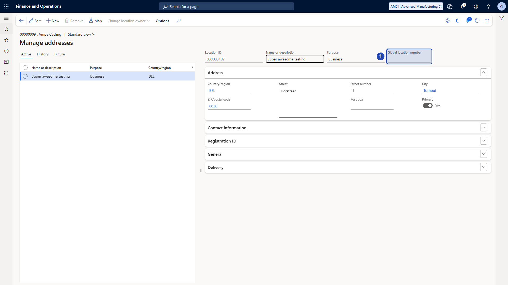
WHS label routing
| Standard table | Field | Type | Label | Purpose |
|---|---|---|---|---|
WHSLabelLayout |
NANAzurePath |
String255 | Azure directory extension | Optional Azure folder prepended to the filename when routing WHS labels to cloud storage |
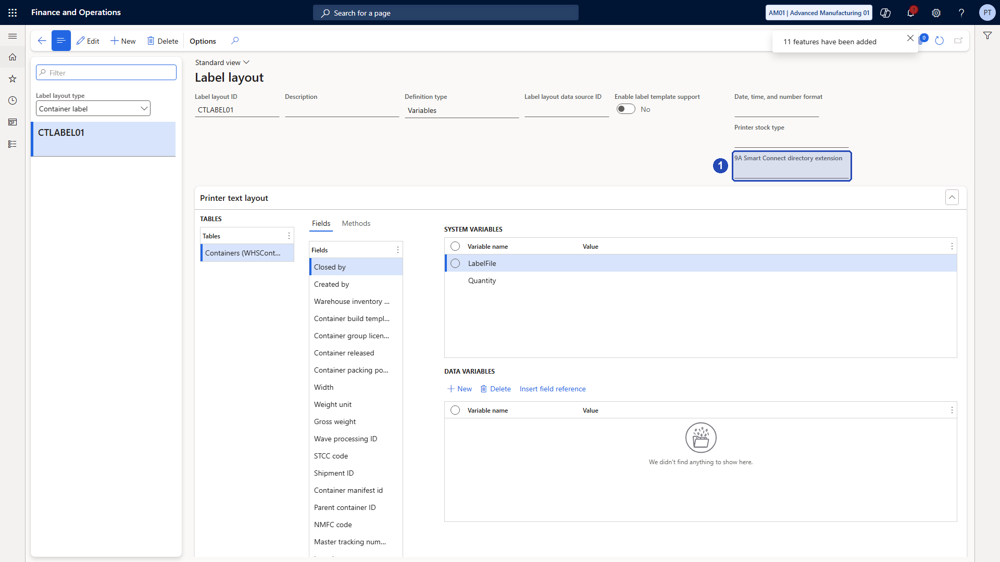
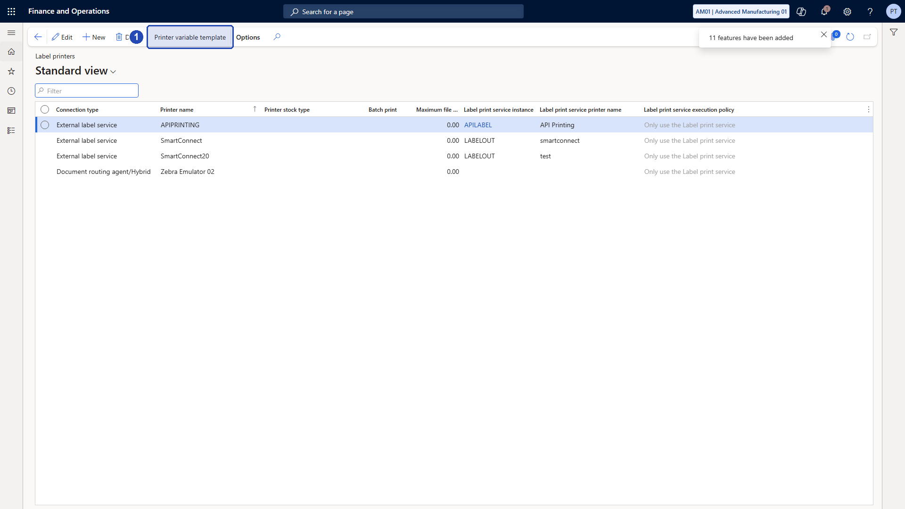
Warehouse external service (Smart Connect processor link)
| Standard table | Field | Type | Purpose |
|---|---|---|---|
WhsExternalServiceInstance |
NANProcessId |
NANProcessorId | FK to NANProcessorTable; links a WHS external service instance to a Smart Connect processor |
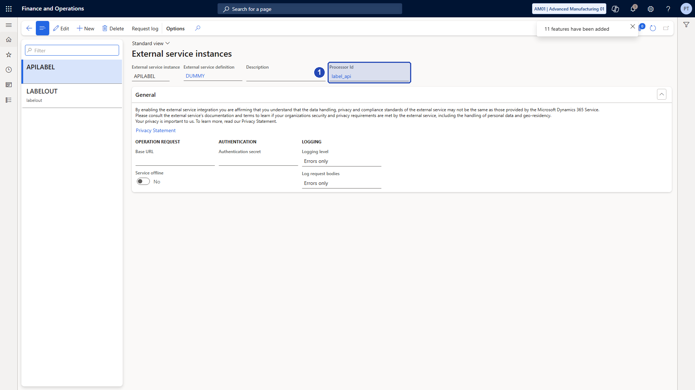
Processor / parameter extensions (DMS module)
| Table extended | Field | Type | Purpose |
|---|---|---|---|
NANParameterTable |
NANExaUseRaptorTemplateForAttachments |
NoYes | Use Raptor document templates for archiving attachments in the DMS flow |
NANProcessorTable / NANProcessorStaging |
NANExaDocumentTemplate |
EXADocumentTemplate | Reference to the Raptor document template used for tagging |
NANProcessorTable / NANProcessorStaging |
NANExaArchiveXml |
NoYes | Archive the XML document to Raptor DWH |
NANProcessorTable / NANProcessorStaging |
NANExaArchivePdf |
NoYes | Archive the embedded PDF to Raptor DWH |
NANProcessorTable |
NANExaArchiveEmail |
NoYes | Archive email records to Raptor DWH (Tungsten flow) |
EB module
| Table extended | Field | Type | Purpose |
|---|---|---|---|
NANQueueTable |
NANEBCompressionFormat |
NANEBCompressionFormat (enum) | Compression format for Cobase/ISO 20022 banking file outputs |
Enum extensions
| Standard enum | New value | Label | Module | Purpose |
|---|---|---|---|---|
SRSPrintMediumType |
NANEdi |
9A EDI | CORE | Registers Smart Connect as an SSRS print destination type |
ModuleAxapta |
NANSmartConnect |
9A Smart Connect | CORE | Module registration in the standard D365 module list |
NANQueueSupportedForms |
EXAPurchInvoiceImported |
EXAPurchInvoiceImported | DMS | Queue form trigger for Raptor All invoices DMS inbound integration |
NANConnecterType |
ExaRaptor |
Raptor | DMS | Connector type for the ExaRaptor document warehouse |
NANConnecterType |
EBCobase |
Cobase | EB | Connector type for the Cobase banking gateway |
Data entities
All 10 OData / DMF data entities in the current release are in the core model. The DMS, EB and PIW add-on models do not expose additional entities.
| Entity class | Label | Primary table | Purpose |
|---|---|---|---|
NANConnecterEntity |
Connectors | NANConnecterTable |
Full connector master (type, URL, auth type, client ID/secret, tenant). Enables DMF import of multi-connector setups. |
NANProcessorEntity |
Processors | NANProcessorTable |
Core processor definitions (handler, connector, type, direction, group, active). Primary DMF target for configuration migration. |
NANProcessorVariableEntity |
Processor variables | NANProcessorVariableTable |
Variable name/value pairs per processor. Enables bulk import of all processor runtime parameters. |
NANProcessGroupEntity |
Process groups | NANProcessGroupTable |
Processor group master (name, description). |
NANQueueEntity |
Queue | NANQueueTable |
Full message queue (id, processor, status, payload, retry count, process step, filename). Enables external monitoring and bulk retry operations. |
NANQueueFormEntity |
Queue forms | NANQueueFormTable |
Maps processors to D365 forms that can enqueue messages for that processor. |
NANPlaceholderTableEntity |
Placeholders | NANPlaceholderTable |
Placeholder master for filename patterns and data substitution rules. |
NANPlaceholderLineEntity |
Placeholder lines | NANPlaceholderLine |
Placeholder variable mappings: token → table/field reference + regex. |
NANBusinessProcessConfigEntity |
Business process | NANBusinessProcessConfig |
Maps business processes (by relation type + account/group) to processors for event-driven routing. |
NANAttributeTableEntity |
Attributes | NANAttributeTable |
Generic key-value attribute store per connector/processor combination; extensibility point for custom properties. |
All 10 entities are available via OData (/data/<EntityName>) and the Data Management workspace. Use them to migrate connector/processor configurations between environments via a DMF definition group.
Glossary
| Term | Definition |
|---|---|
| Connector | A saved connection to an external application, reusable by many processors. |
| Processor | A single integration process: data handler + connector + trigger + direction. |
| Data handler | The class that shapes the payload; its name encodes the direction (e.g. NANHandlerOutER). |
| Processor group | An ordered set of processors that must run together. |
| Variable | A handler-defined setting completed per processor (e.g. Directory). |
| Queue | A reliable buffer of messages that can be retried on failure. |
| Event | An asynchronous record that something must be processed later. |
| Go / no-go | A flag a handler sets to true only when there is data to process. |
| DMF | Data Management Framework — the standard D365 import/export engine. |
| ER | Electronic Reporting — configurable, format-driven document generation. |
| AS2 | Applicability Statement 2 — a secure EDI-over-internet protocol. |
| UBL | Universal Business Language — a standard XML format for business documents. |
| Peppol | A pan-European framework and network for standardised e-invoicing. |
| ISO 20022 | The international standard for financial messages (PAIN payments, CAMT statements). |
| SAS | Shared Access Signature — a scoped, time-limited Azure Storage token. |
| Telemetry | Operational metrics sent to Application Insights. |
Object index
A quick lookup of the most important technical objects (prefix NAN).
Engine & orchestration
NANOrchestrator NANOrchestratorV2 NANOrchestratorController NANProcessor NANProcessorIn NANProcessorOut NANProcessorWorkDispatcher NANProcessorWorkItemClaim
Connectors
NANConnecter NANConnecterAPI NANConnecterAS2 NANConnecterBlob NANConnecterFileShare NANConnecterSFTP NANOAuthToken
Key tables
NANParameterTable NANConnecterTable NANProcessorTable NANProcessorVariableTable NANQueueTable NANProcessorLogTable NANProcessorEventTable NANProcessGroupTable
Forms & workspace
NANWorkspace NANConnecterTable NANProcessorTable NANQueueTable NANParameterTable
Document information
This manual combines the official functional documentation with a source-code analysis of the test branch and verification against a live D365 F&O environment.
Revision history (functional manual)
| Date | Area | Summary |
|---|---|---|
| 26/01/2024 | All | Initial version. |
| 21/06/2024 | Data Management Framework | Added DMF setup. |
| 30/07/2024 | Queueing | Additional queueing information. |
| 20/02/2025 | Connectors | Additional connector options. |
| 23/10/2025 | Ch. 2, 5 | New parameters, refreshed screenshots, extended descriptions. |
Functional content is derived from the 9A Smart Connect manual. Technical content is derived from the InputOutputFrameworkV2 (and DMS/EB/PIW/Pylades) source in the test branch, cross-checked with the running NANWorkspace. Diagrams render locally with Mermaid.js.